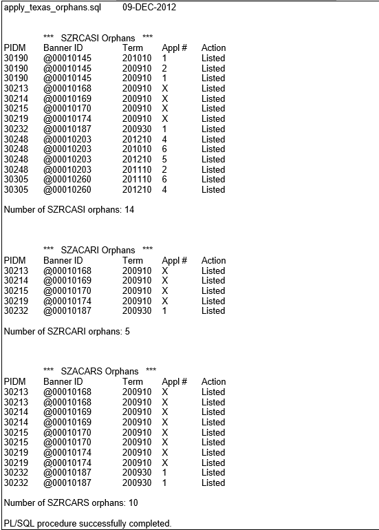
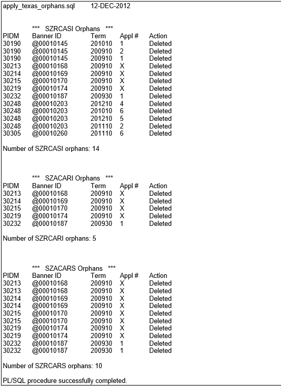
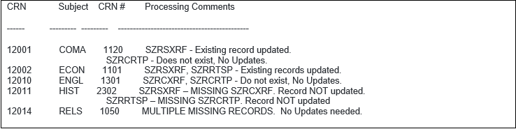
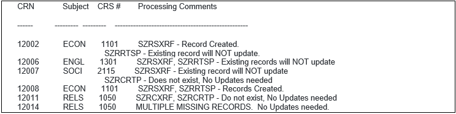
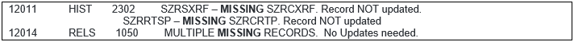
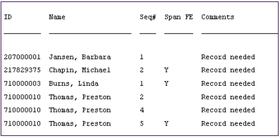
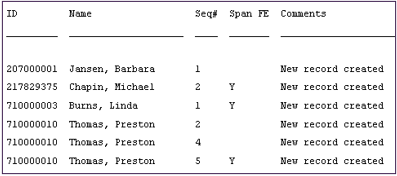
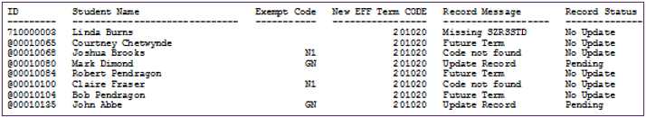
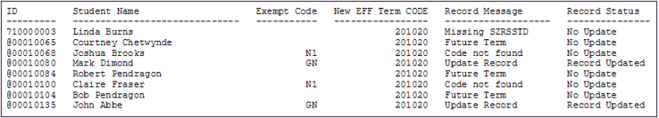

TCC Processes and Reports
ApplyTexas Delete (APPLY_TEXAS_ORPHANS.SQL)
This SQL script is designed to run from the Operating System prompt and will identify orphan records in the TCC Admissions tables.
These records were viewable on the ApplyTexas CA Supplemental Information and the ApplyTexas CA Residency pages (SZACASI and (SZACARI) but the parent application viewable from the Admissions Application page (SAAADMS) has been deleted. These orphan records were not deleted, however, and may no longer be viewable but still exist in the database TCC tables.
The script includes a parameter which allows the user to indicate the mode in which the script is to run. If the response to the parameter is a value of A for Audit, the process only identifies the orphan records and does not delete. If the parameter response is a value of D for Delete, the process will delete the identified orphan records.
Recommendation: Run the process with a parameter of A and review existing orphans before running with a D for delete.
This process will read records in the following tables:
| Table name | PIDM field | Term field | App # field |
|---|---|---|---|
| SARADAP | saradap_pidm | saradap_term_code_entry | saradap_appl_no |
| SZRCARI | szrcari_pidm | szrcari_term | szrcari_appl_no |
| SZRCARS | szrcars_pidm | szrcars_term | szrcars_appl_no |
| SZRCASI | szrcasi_pidm | szrcasi_term | szrcasi_appl_no |
The process will compare the fields above (PIDM, Term. and Application Number) for tables SZRCARI, SZRCARS. and SZRCASI to records contained in the SARADAP table, which displays through the SAAADMS page. The process will compare PIDM to PIDM, Term to Term. and Application Number to Application Number, then identify records in SZRCARI, SZRCARS, and SZRCASI where no corresponding record is found in SARADAP. The steps are outlined below.
- For each record in SZRCARI, read and extract the PIDM, Term, and Appl #. Read the SARADAP table and search for a record where all of the following all true:
szrcari_pidmmatches thesaradap_pidm.szrcari_termmatches thesaradap_term_code_entry.szrcari_appl_nomatches thesaradap_appl_no.
If a record is found in the SARADAP table that matches the above criteria, this SZRCARI record is valid and is not an orphan. Proceed to the next SZRCARI record.
If a record does not exist in the SARADAP table that matches the above criteria, the SZRCARI record is an orphan and processing of this record continues as indicated below:
- If the Audit/Update parameter is A (Audit), this SZRCARI record is listed in the output with an Action column value of Listed.
- If the Audit/Update parameter is U (Update), this SZRCARI record in listed in the output with an Action column value of Deleted.
- For each record in SZRCARS, read and extract the PIDM, Term, and Appl #. Read the SARADAP table and search for a record where all of the following are true:
szrcars_pidmmatches thesaradap_pidm.szrcars_termmatches thesaradap_term_code_entry.szrcars_appl_nomatches thesaradap_appl_no.
If a record is found in the SARADAP table matching the above criteria, this SZRCARS record is valid and is not an orphan. Proceed to the next SZRCARS record.
If a record does not exist in the SARADAP table matching the above criteria, the SZRCARS record is an orphan and processing of this record continues as indicated below:
- If the Audit/Update parameter is A (Audit), this SZRCARS record is listed in the output with an Action column value of Listed.
- If the Audit/Update parameter is U (Update), this SZRCARS record in listed in the output with an Action column value of Deleted.
- For each record in SZRCASI, read and extract the PIDM, Term, and Appl #. Read the SARADAP table and search for a record where all of the following are true:
szrcasi_pidmmatches thesaradap_pidm.szrcasi_termmatches thesaradap_term_code_entry.szrcasi_appl_nomatches thesaradap_appl_no.
If a record is found in the SARADAP table that matches the above criteria, this SZRCASI record is valid and is not an orphan. Proceed to the next SZRCASI record.
If a record does not exist in the SARADAP table that matches the above criteria, the SZRCASI record is an orphan and processing of this record continues as indicated below:
- If the Audit/Update parameter is A (Audit), this SZRCASI record is listed in the output with an Action column value of Listed.
- If the Audit/Update parameter is U (Update), this SZRCASI record in listed in the output with an Action column value of Deleted.
Processing notes
- In any of the above cases, records are not deleted from SARADAP.
- If the Application Number of an Orphan is missing or null, an X is listed to indicate the null value in the output.
- The output sorts the records by PIDM.
ApplyTexas Delete recommendations
Review the following recommendations for running the apply_texas_orphans.sql script in audit mode and in update mode.
- Run the
apply_texas_orphans.sqlscript in Audit mode.- A listing of records select in Audit mode is not written to a file and must be captured by the person running the sql script from the OS prompt.
- Review all records selected in Audit mode. Many of these orphaned records could be in error from manual data input on the TCC Student pages SZACARI and SZACASI based on Term or Appl #.
- Evaluate the list of existing orphan records that may be deleted. Modify records that are manual data entry errors.
- Repeat until confident the script is deleting only what is intended for deletion.
- Run the
apply_texas_orphans.sqlscript in Update mode to delete the existing orphans. - Run the
apply_texas_orphans.sqlscript periodically to ensure the TCC delivered trigger is deleting the TCC records associated with a baseline Admissions applications.
Following is an example of output listed when the parameter is A (Audit):

Following is an example of output listed when the parameter is U (Update):

Banner Self-Service (BZSKGSTU.P_TXINFO)
Cross Reference Insert Process (SZPCRIP)
Use the Cross Reference Insert Process (SZPCRIP) ito create new schedule records and to update existing records which are viewable on the Section Cross Reference Information Page (SZASXRF) and the TSI Schedule Restriction page (SZATPRQ). Which records are created or updated are dependent on entered parameters.
For example, if records already exist and are viewable on both SZASXRF and SZATPRQ for a particular CRN, this process may update those records with new information from the Course Cross Reference Information page (SZACXRF), the Schedule Page (SSASECT), and from the Catalog TSI Restrictions Page (SZACPRQ).
Another example is if a record does not yet exist on SZASXRF but a record exists on both SZACXRF and SSASECT, then a new SZASXRF record is created. At the same time, if a record exists on SZACPRQ for the CRN, then a record is created and viewable on SZATPRQ.
Program Parameters
| Field | Description |
|---|---|
| Term Code (YYYYNN) | Required. Enter the term for which the SZRSXRF (SZASXRF) and SZRRTSP (SZATPRQ) records will update. Multiples not allowed. |
| CRN | Required. Three options are allowed.
|
| Update Existing? | Required. Enter N or Y. N indicates that existing records are not updated. This option will only create new records. Y indicates that both existing records are updated and new records are created. If existing records are updated, the existing FE-Census and FE-Span flags are not preserved and both are created in the new SZASXRF record with blank fields (check boxes are cleared). |
SZPCRIP processing notes
The following steps are performed for each CRN indicated by the entered parameters.
- Verify the existence of a record in table SSBSECT which is viewable on SSASECT for a CRN.
- If one CRN is entered in parameter 2, this is the only CRN verified in SSBSECT.
- If multiple CRNS are entered in parameter 2 these are the only CRNS verified in SSBSECT.
- If parameter 2 is the wildcard (%), every CRN listed in SSBSECT for this term is processed.
- The Section of the SZRSXRF record may update if it does not match the Section listed on SSBSECT.
- Verify the existence of a record in SXRCXRF which is viewable on SZACXRF for the Subject and Course of this CRN for this term.
- If a record exists in SZRCXRF and no record exists in SZRSXRF, then a new record is created in SZRSXRF which is viewable on SZASXRF for this CRN.
- If Update Existing? parameter is Y and a record already exists in SZRSXRF, then this record is updated with the values currently contained in the SZRCXRF record.
- Verify the existence of a record in SZRCRTP, which is viewable on SZACPRQ for the Subject and Course of this CRN for this term.
- If a record exists in SZRCRTP and no record exists in SZRRTSP which is viewable on SZATPRQ, then a new record is created in SZRRTSP for this CRN.
- If Update Existing? parameter is Y and a record already exists in SZRRTSP, then this record is updated with the values currently contained in SZRCPRQ record.
SZPCRIP output LIS file
Review the following output listings for SZPCRIP.
Following is an example of the output listing when the Update Existing? parameter is Y.

Following is an example of the output listing when the Update Existing? parameter is N.

Records viewable on SSASECT (SSBSECT), SZACXRF (SZRCXRF), or SZACPRQ (SZRCRTP) are considered parent records and necessary for creation of records viewable on either SZASXRF (SZRSCRF) or SZATPRQ (SZRRTSP). If records are existing in SZASXRF or SZATPRQ but the parent records are missing, the Processing Comments reflect MISSING. In this case the user must decide if the parent record is missing and needs to be replaced or if the records in either SZRSXRF or SZRRTSP needs to be deleted.

Drop Limit Orphan Report (TCC_STUDENT_ORPHAN_REPORT.SQL)
This SQL script is designed to run from the Operating System prompt and will identify orphan records in the TCC Drop Limit tables. These records are viewable on the State Drop Limit Rules (SZADLMT) page.
The parent record (SZRDLMT) is viewable on SZADLMT for a Term and the child records (SZRDLRS) also viewable for the same Term. However, orphan SZRDLRS records may have previously been created using the SZADLMT INB form. This issue has been fixed in the TCC Student 9 transformed SZADLMT page. When an institution is using the TCC Student 9 SZADLMT page, no additional orphan records are created.
This script is designed to make the user aware of orphan records with no parent record and parent records with no child records. It is then the institution’s responsibility to remove the parent or orphan child records, as deemed appropriate by the institution.
Faculty Roll (SZPFROL)
Use the Faculty Roll Process (SZPFROL) to review Faculty records for a term and then roll those records to a new term if the Roll flag is selected for the record.
The parameters include a term from which records are read and the term to which those records are copied. An Audit option is included.
The process is executed through TCC Student baseline Job Submission.
All parameters are single entry only.
Program Parameters
| Current Term Code (YYYYNN) | Enter the current term for which Faculty records (SZAFACC or SZAFACU) are reviewed to determine records with the Roll flag selected. |
| New Term Code (YYYYNN) | Enter the future term to which Faculty records will copy. |
| FICE Code | Enter the FICE Code for which Faculty records (SZAFACC or SZAFACU) will copy. |
| Copy Non FE Records (Y/N) | Enter Y to copy records not marked as Span FE. Enter N to not copy records which are not marked as Span FE. |
| Copy Span FE Records | Enter Y to copy records marked as Span FE. Enter N to not copy records which are marked as Span FE. |
| Reporting Institution Type | Enter C or U.
|
| Run Mode | When either Mode is processed, the LIS output file contains a list of faculty for whom records are copied or need to be copied. A - Enter A to run this process in Audit Mode. No new Faculty records are created on either SZAFACC or SZAFACU. The output listing is used to validate what will happen when run in Update Mode. U - Enter U to run this process in Update Mode. New Faculty records are created, if appropriate. The output listing includes faculty for whom a new record was created. |
SZPFROL processing notes
Use this process to check all faculty records in the term code indicated by Parameter 1, Current Term Code.
A faculty record is copied to the term code indicated by Parameter 2, New Term Code, if the following are true.
- One of the following is true:
- The faculty records are viewable on page Faculty – Community College (SZAFACC) and the Reporting Institution Type in Parameter 6 is C.
- The faculty records are viewable on page Faculty – University (SZAFACU) and the Reporting Institution Type in Parameter 6 is U.
- Faculty records must currently exist in the Term Code indicated by Parameter 1, Current Term Code.
- The FICE Code of the faculty record matches the FICE Code indicated by Parameter 3.
- The Roll flag is selected for a Faculty Record (
szrfacc_roll_indorszrfacu_roll_ind). - A Faculty record exists with the Span FE flag cleared and the Copy Non FE Records, Parameter 4, is Y.
- A Faculty record exists with the Span FE flag selected and the Copy FE Records, Parameter 5, is Y.
- At least one of Parameter 4, Copy Non FE Records, or Parameter 5, Copy FE Records, contains Y.
- The Run Mode, Parameter 7, is U for update. If the parameter is A for audit, then no records are created.
- A record does not already exist in the new Term for the same FICE and Faculty ID (PIDM).
Output – LIS file
Faculty ID and Name are reported in the LIS output file if their record needs to be copied or is copied to a new term. A record is written regardless of the Run Mod parameter. See the following examples.
Example: Audit Mode LIS file – Faculty Roll Process (SZPFROL)

Example: Update Mode LIS file – Faculty Roll Process (SZPFROL)

Hazlewood Exemption Copy (SZPHECP)
The Hazlewood Exemption Copy process (SZPHECP) is provided to copy data contained on the Haz Exmpt and Federal Veteran Awards page (SZAHEVH) to a new term.
Students with data stored and viewable through the Haz Exmpt and Federal Veteran Awards page (SZAHEVH) may also need the data to be reported in a future term. This new process allows copying data viewable on the SZAHEVH page from the current term to a new future term.
Options include copying data for one student, all students, all students for a particular FICE, or a population selection of students. Other options include specification of which data to copy. This report runs from TCC Student Job Submission.
Program Parameters
- All parameters are single entry unless specified otherwise.
- All parameters are required unless specified otherwise.
| Field | Description |
|---|---|
| From Term (YYYYNN) | SZAHEVH Reporting Term from which student records are copied. (STVTERM) Default is blank. |
| To Term (YYYYNN) | SZAHEVH Reporting Term to which student records are copied. (STVTERM) Default is blank. |
| Student ID | Enter a Student ID to copy data for just one student to the new term. Enter a wildcard (%) to copy all students in the From Term to the new To Term. In this case, choosing students by FICE is optional. Blank is allowed only if the population selection parameters are entered. Default is blank. |
| Application ID | Enter the Application ID if running for a population selection. Required only if Student ID is blank. Default is blank. |
| Selection ID | Enter the Selection ID if running for a population selection. Required only if Student ID is blank. Default is blank. |
| Creator ID | Enter the Creator ID if running for a population selection. Required only if Student ID is blank. Default is blank. |
| User ID | Enter the User ID if running for a population selection. Required only if Student ID is blank. Default is blank. |
| FICE (XXXXXX) | Optional If entered, this FICE is used to determine which students are included in the copy process. Default is blank. Note: This parameter is only used if a wild card is entered in parameter 03 (Student ID).
|
| Data Selection | Enter H to copy only the SZAHEVH Hazlewood/Veterans Report tab data to the new term. This data is contained in tables SZRHEVA and SZRHEVR and has a Reporting Term the same as indicated by Parameter 01 From Term. This data does not include the 4 indicators on the bottom right of the Service Member section. Enter HI to copy the data which is viewable on the SZAHEVH page in the Hazlewood/Veterans Report tab in the Awards, Recipient, and Service Member sections. This data is contained in tables SZRHEVA and SZRHEVR and has a Reporting Term the same as indicated by Parameter 01 From Term. This data includes the 4 indicators on the bottom right of the Service Member section. All other data on the first tab is included. The 4 indicators on the bottom right of Service Member section include Loan Default (Item 16), Time of Entry (Item 24), Combat Exemption, and Out of State Waiver. Enter M to copy only the SZAHEVH Military Benefits tab data to the new term. Enter C to copy only the SZAHEVH Comments tab data to the new term. Enter HM to copy only the SZAHEVH Hazlewood/Veterans Report tab and the Military Benefits tab data to the new term. Enter HC to copy only the SZAHEVH Hazlewood/Veterans Report tab and the Comments tab data to the new term. Enter MC to copy only the SZAHEVH Military Benefits tab and the Comments tab data to the new term. Enter a wildcard to copy all data (HI, M and C) to the new term for each student. Default is blank. ** If HIM is entered, all data indicated above for both HI and M values are copied. ** If HIC is entered, all data indicated above for both HI and C values are copied. ** If HMC is entered, all data indicated above for the above H, M and C values are copied. Note: An I cannot be entered by itself as the only parameter value. An I can only be entered with an H. An H can be entered by itself or with any of the other I, M, or C parameters.
|
| Mode | A indicates this report will run in Audit Mode and the SZAHEVH data is not copied to the new term. U indicates this report will run in Update Mode and the SZAHEVH data is copied to the new term. Default is A. |
SZPHECP student selection
If Parameter 03 contains a Student ID, then only this student is processed.
If Parameter 03 (Student ID) contains a wild card (%) then every student with assigned records in the Reporting Term indicated by the From Term (Parameter 01) is considered for processing. Additional conditions exist which are outlined below.
- In the case of a wildcard entered in Parameter 03, a FICE entered in Parameter 08 may be used to select which students are processed. The FICE is not required. If no FICE is entered all students with records in the From Term are processed.
- In the case of a wildcard entered in Parameter 03 a FICE entered in Parameter 08 may be used to select which students are processed. If a FICE is entered the Student Campus assigned to the student’s current Curricula record (that is the same Term as the To Term in Parameter 02 or is the most recent Term before the To Term in Parameter 02) is evaluated. The Curricula record is viewable through the General Student page (SGASTDN) and stored in the SORLCUR table. The Campus assigned to the Student’s most recent Curricula is evaluated as follows:
- If the student has no record displayable through the General Student page (SGASTDN) with a curriculum record attached, the student is not included in the copy process.
- If the Campus is blank and contains no value, the student is included for processing.
- If the Campus contains a value, the GTVSDAX rule CAMPFICE is evaluated. A CAMPFICE rule should exist which has the Student Campus Code defined by the External Code, and the Translation Code must be equal to the FICE Code (Parameter 08).
- If this GTVSDAX rule exists, the student is included for processing.
- If this GTVSDAX rule does not exist, the student is not included for processing.
If Parameter 03 is blank, then the four population selection parameters are required. All four parameters are used to determine which students are processed.
SZPHECP data processing
For each student selected for processing, the following actions are completed.
Determine which data to process as indicated by the value in Parameter 09 (Data Selection).
- If an H is entered in Parameter 09, the data copied is viewable on the SZAHEVH page in the Hazlewood/Veterans Report tab in the Awards, Recipient, and Service Member sections. This data is contained in tables SZRHEVA and SZRHEVR and has a Reporting Term the same as indicated by Parameter 01 From Term.
- Enter HI to copy the data copied is viewable on the SZAHEVH page in the Hazlewood/Veterans Report tab in the Awards, Recipient and Service Member sections. This data is contained in tables SZRHEVA and SZRHEVR and has a Reporting Term the same as indicated by Parameter 01 From Term. This data DOES include the 4 indicators on the bottom right of the Service Member section. All other data on the first tab is included.
The 4 indicators on the bottom right of Service Member section include Loan Default (Item 16), Time of Entry (Item 24), Combat Exemption and Out of State Waiver.
- If an M is entered in Parameter 09 the data copied is viewable on the SZAHEVH page in the Military Benefits tab in the Benefits, Counselor Contact, Miscellaneous, and Service Record sections. This data is contained in tables SZRHEMB, SZRHEMC and SZRHEMS and has a Reporting Term the same as indicated by Parameter 01 From Term.
- If a C is entered in Parameter 09 the data copied is viewable on the SZAHEVH page in the Comments tab. This data is contained in SZRHEVC table and has a Reporting Term the same as indicated by Parameter 01 From Term.
- If HM is entered all data indicated above for both H and M values are copied.
- If HC is entered all data indicated above for both H and C values are copied.
- If MC is entered all data indicated above for both M and C values are copied.
- If a wildcard (%) is entered in Parameter 09 all of the data listed by parameter values of HI, M and C in Parameter 09 are copied to the new term.
- ** If HIM is entered all data indicated above for both HI and M values are copied.
- ** If HIC is entered all data indicated above for both HI and C values are copied.
- ** If HMC is entered all data indicated above for the above H, M and C values are copied.
- An I cannot be entered by itself as the only parameter value. An I can only be entered with an H. An H can be entered by itself or with any of the other I, M or C parameters.
For the students selected, read all the data records indicated by Parameter 09 (Data Selection) in the term indicated by Parameter 01 (From Term). Copy those records to the term indicated by Parameter 02 (To Term). Additional details follow:
- Hazlewood/Veterans Report tab (Data Selection – H)
- Awards section:
- If a student has an Award record in the From Term (Reporting Term) and the same Award already exists in the To Term (Reporting Term) with the same Award Term and Hour Type, this record is not copied forward.
- If a student has an Award record in the From Term (Reporting Term) and an Award record does not exist in the To Term (Reporting Term) with the same Award Term and Hour Type, this record is copied forward to the To Term (Reporting Term).
- All data fields are copied forward including Certify Date and Reported Date. This functionality allows the previously reported Awards to be viewable within the new Reporting Term. The previously reported Awards will not be reported again unless the SZAHEVH Reported Date is manually removed.
- Recipient and Service Member section:
- If a student has data in the Recipient or Service Member section in the From Term (Reporting Term) and already has data recorded in the Recipient or Service Member section in the To Term (Reporting Term) the data is not copied forward.
- If a student has data in the Recipient or Service Member section in the From Term (Reporting Term) and does not have data for Recipient or Service Member in the To Term (Reporting Term) the data is copied forward.
- All data fields except Reported Institution Hours and Total Hrs are copied forward.
- This data does not include the 4 indicators on the bottom right of the Service Member section.
- LIS file messaging:
- If no data was found in the From Term (Reporting Term) for any Hazlewood/Veterans data, a message is included in the LIS file – No data found - H.
- If any data was copied from the From Term (Reporting Term) to the To Term (Reporting term), a message is included in the LIS file – Successful Copy – H.
- If the process is run in Audit mode and it is determined data needs to be copied from the From Term (Reporting Term) to the To Term (Reporting Term), a message is included in the LIS file – Data Copy Needed - H.
- If data was found in the To Term (Reporting term) which causes data not to copy forward, a message is included in the LIS file – Data already exists - H.
- Awards section:
- Hazlewood/Veterans Report tab (Data Selection – HI)
- Awards section:
- If a student has an Award record in the From Term (Reporting Term) and the same Award already exists in the To Term (Reporting Term) with the same Award Term and Hour Type, this record is not copied forward.
- If a student has an Award record in the From Term (Reporting Term) and an Award record does not exist in the To Term (Reporting Term) with the same Award Term and Hour Type, this record is copied forward to the To Term (Reporting Term).
- All data fields are copied forward including Certify Date and Reported Date. This functionality allows the previously reported Awards to be viewable within the new Reporting Term. The previously reported Awards will not be reported again unless the SZAHEVH Reported Date is manually removed.
- Recipient and Service Member section:
- If a student has data in the Recipient or Service Member section in the From Term (Reporting Term) and already has data recorded in the Recipient or Service Member section in the To Term (Reporting Term), the data is not copied forward.
- If a student has data in the Recipient or Service Member section in the From Term (Reporting Term) and does not have data for Recipient or Service Member in the To Term (Reporting Term), the data is copied forward.
- The 4 indicators on the bottom right of Service Member section include Loan Default (Item 16), Time of Entry (Item 24), Combat Exemption, and Out of State Waiver.
- All data fields except Reported Institution Hours and Total Hrs are copied forward.
- LIS file messaging:
- If data was not found in the From Term (Reporting Term) for any Hazlewood/Veterans data, a message is included in the LIS file – No data found - HI.
- If any data was copied from the From Term (Reporting Term) to the To Term (Reporting term), a message is included in the LIS file – Successful Copy – HI.
- If the process is run in Audit mode and it is determined data needs to be copied from the From Term (Reporting Term) to the To Term (Reporting Term), a message is included in the LIS file – Data Copy Needed - HI.
- If data was found in the To Term (Reporting term) which causes data not to copy forward, a message is included in the LIS file – Data already exists - H.
- Awards section:
- Military Benefits tab (Data Selection – M)
- Benefits section:
- If a student has a Benefit record in the From Term (Reporting Term) and the same Benefit record already exists in the To Term (Reporting Term) with the same Term Code and Military Benefit Type, this record is not copied forward.
- If a student has a Benefit record in the From Term (Reporting Term) and a Benefit record does not exist in the To Term (Reporting Term) with the same Term Code and Military Benefit Type, this record is copied forward to the To Term (Reporting Term).
- All data fields are copied forward including Certify Date. This functionality allows all previously recorded Military Benefits to be viewable within the new Reporting Term.
- Counselor Contact and Miscellaneous section:
- If a student has data in the Counselor Contact and Miscellaneous section in the From Term (Reporting Term) and already has data for Counselor Contact and Miscellaneous in the To Term (Reporting Term), the data is not copied forward.
- If a student has data in the Recipient or Service Member section in the From Term (Reporting Term) and does not have data for Counselor Contact and Miscellaneous section in the To Term (Reporting Term), the data is copied forward.
- All data fields are copied forward.
- Service Record section:
- If a student has data in the Service Record section, the data is always copied forward to the To Term (Reporting Term). The records copied forward are added to the end of the list of Service Record entries in the To Term and the newly copied records are sorted by earliest Entry date first. This is to ensure all Service Records are included in the new Reporting Term.
- Both the Entry and Separation dates are copied forward.
- LIS file messaging:
- If data was not found in the From Term (Reporting term) for any Military Benefits data, a message is included in the LIS file – No data found - M.
- If any data was copied from the From Term (Reporting Term) to the To Term (Reporting term), a message is included in the LIS file – Successful Copy – M.
- If the process is run in Audit mode and it is determined data needs to be copied from the From Term (Reporting Term) to the To Term (Reporting term), a message is included in the LIS file – Data Copy Needed - H.
- If data was found in the To Term (Reporting term) which causes data not to copy forward, a message is included in the LIS file – Data already exists – M.
- Benefits section:
- Comments tab (Data Selection – C)
- Comments section:
- If a student has Comments in the From Term (Reporting Term) the comments are always copied forward to the To Term (Reporting Term). The records copied forward are added to the end of the list of Comments and are sorted by most recent Reporting Term first. Within each Reporting Term, the Comments are sorted by earliest Award Term first. This is to ensure all Comments are included in the new Reporting Term.
- All data fields are copied forward.
- LIS file messaging:
- If Comments were not found in the From Term (Reporting term), a message is included in the LIS file – No data found - C.
- If Comments were copied from the From Term (Reporting Term) to the To Term (Reporting term), a message is included in the LIS file – Successful Copy - C or Data Copy Needed - C.
- If the process is run in Audit mode and it is determined that Comments need to be copied from the From Term (Reporting Term) to the To Term (Reporting term), a message is included in the LIS file – Data Copy Needed - C.
- Comments section:
The LIS file is produced with a report of which student data was copied (or not).
- One record is listed for each student processed.
- The Student ID is included.
- The Student name is listed.
- The Comment column includes up to three sections, maximum. The number of sections depends on the Mode parameter.
- If the Mode parameter includes H or HI then the Comment will include the results of processing this student for the SZAHEVH Awards, Recipient and Service Member sections.
- If the Mode parameter includes M then the Comment will include the results of processing this student for the SZAHEVH Military Benefits sections.
- If the Mode parameter includes C then the Comment will include the results of processing this student for the SZAHEVH Comments sections.
- The Comment column includes phrasing which indicates what processing was completed or is recommended for this student and then an indicator (H, HI, M, or C) as to the data reviewed or processed.
- Possible phrases are explained below:
- Data already exists - Indicates data already exists for this data set in the To Term parameter.
- No data found - Indicates data in the From Term parameter does not exist.
- Data copy needed? - Indicates data was found in the From Term and data was not copied because the Mode parameter is A.
- Successful copy - Indicates data in the From Term parameter exists and was successfully copied for this student to the To Term parameter.
Load Compliance Requests (SZPLCMP)
Use this process to load data into the TCC Student CAPP Compliance Request Table (SMRRQCM).
The program is executed through TCC Student baseline Job Submission.
Program parameters (default value)
| Field | Description |
|---|---|
| Term Code (YYYYNN) | Required. Enter a term code which is then assigned to the Evaluation Term on the compliance request (see SMARQCM). This term code is also used to extract the most recent assigned Primary Curriculum which has a Term code less than or the same as this term code. The Catalog Term (sovlcur_term_code_ctlg) of the Primary Curriculum, viewable through SGASTDN, is assigned to the Catalog Term on the Compliance Request (SMARQCM). |
| Program Code | Required. Enter program code for which a compliance is to run (null). |
| ID | Optional. Enter ID if running process for a single ID. |
| Application ID | Optional. Enter Application ID if processing for a population selection. |
| Selection ID | Optional. Enter Selection ID if processing for a population selection. |
| Creator ID | Optional. Enter Creator ID if processing for a population selection |
| User ID | Optional. Enter User ID if processing for a population selection |
| Course Usage Order | Required.
|
| Use In Progress Courses | Required. Valid values include Y or N. Y indicates in progress courses are considered for compliance. Recommendation: Core courses might only be considered complete when the course is graded, thus, a value of N is advised. A value of N will not use In Progress course work considered as Core completion. |
SZPLCMP processing notes
Use this process to load compliance requests into the TCC Student CAPP Compliance Request Table (SMRRQCM).
These requests are viewable through the Compliance Request Management page (SMARQCM).
This process is intended to load compliance requests for a single Program Code, such as a Core Curriculum Program Code. If the output of multiple Programs is expected, this process must be executed one time for each Program Code, possibly with multiple population selections.
After this process is run, the institution can choose to run the baseline Batch Compliance Process (SMRBCMP) or process an individual request through the baseline Compliance Request Management page (SMARQCM) to complete the compliance evaluations requested.
This process expects the student will have a curriculum record viewable on SGASTDN with a Catalog Term assigned. The effective Term Code for the Core record defined on SOACURR needs to be before the student’s Catalog Term on their assigned curriculum.
Progress Measure Update (SZPPGMS)
Use the Progress Measure Update process (SZPPGMS) which is run through baseline Job Submission to read the Core Curriculum information in the baseline CAPP tables and move that data to the SZBPGCC – Progress of Core Curriculum table and to the SZRPGCS – Progress of Core Courses table.
These tables are viewable through the TCC Progress Measures page (SZAPGMS) on the CORE tab. Data in these tables is then used for including Core Curriculum information on the printed Transcript (SZRTRTC) and through the EDI Transcript (SZREDIY).
The program is executed through TCC Student baseline Job Submission.
Following are the steps performed by this process.
Evaluate core curriculum completion status
For each student in the parameters (individual student ID or population selection), their Core Curriculum completion status is evaluated through the compliance results stored in the baseline CAPP module.
Parameter 01 – Program Code is used to determine which CAPP compliance result is the Core Curriculum.
- If a Student ID is entered in Parameter 2, then the Population Selection parameters (Parameters 3 – 6) are ignored.
- If a Student ID is not entered in Parameter 2, then the Population Selection parameters are used to determine which students are processed.
- If the CAPP Compliance Results indicate the student has met the requirements of the curriculum, then the Compliance Date viewable on the Compliance Request Activity page (SMACACT) is copied to the Completed Date field on SZAPGMS – Core Curriculum Completion tab.
Copy course work to SZBPGCC and SZRPGCS
The course work used to complete Areas of the baseline CAPP Compliance request for each student is copied to the Progress of Core Curriculum table (SZBPGCC) and the Progress of Core Courses table (SZRPGCS).
To ensure the most recent compliance is used to record the Core Completion status, previously existing rows on SZAPGMS are deleted for this student including manually entered rows with the following exception:
- If the Core Completed Rework parameter is set to N students who have previously completed their Core requirements and for whom a value exists in the Completed Date field (
szbpgcc_complete_date) on the TCC Progress Measures page (SZAPGMS) will not have their data updated or overwritten. When a student is declared Complete, they are ignored by the Progress Measures Update process (SZPPGMS). - If the Core Completed Rework parameter is set to Y, students who have previously completed their Core requirements and for whom a value exists in the Completed Date field (
szbpgcc_complete_date) on the TCC Progress Measures page (SZAPGMS) will have their data updated or overwritten.
Only graded courses are copied from CAPP to SZAPGMS.
Recommendation: Because courses need to be graded to count as meeting a Core requirement, the recommendation is to not allow In-progress course work used to meet a Core requirement.
The Met Indicator in CAPP will determine if the Date Completed field in the Core Curriculum Completion section of the Progress Measure page (SZAPGMS) is updated.
The Area, Term, Subject, Course, Grade, and Transfer Institution are copied to the Core Curriculum Course Work Completed section of the Progress Measure page (SZAPGMS).
Write student ID and name to Lis file
The Student ID and Name are written to the associated .lis file to indicate their Core Curriculum information displayed on SZAPGMS has been updated. Also included is the CAPP Request number used for evaluation purposes.
The Request number column in the .lis file may indicate Invalid Compliance Results X. This is only displayed when a compliance request does not have data for the same Request number in one of the three baseline tables (SMBPOGN, SMBAOGN, and SMRDOUS) used by SZPPGMS.
Example: Invalid Compliance Results 3 may indicate the student has records for the Core compliance in the Area (SMBAOGN) table but not in the Program (SMBPOGN) table.
Recommendation: In this case, a recommendation is to purge the compliance requests and start fresh with valid results.
Parameters
The parameters used for this process are included below.
| Field | Description |
|---|---|
| Program Code | Enter the Program Code name of the Core Curriculum program. Validated by SMAPRLE (SMRPRLE_PROGRAM). This Program Code is the same Program Code used in CAPP for determining if a student has met the core requirements. |
| ID | Enter a Student ID if only this single student is to process by SZPPGMS. This student should have compliance results for the Program Code indicated by Parameter 1 (Program Code) stored in the CAPP module. |
| Application ID | Enter the Application of the Population Selection if this process is to run for a population selection of students. These students should have current compliance results for the Program Code indicated by Parameter 1 (Program Code) stored in the CAPP module. |
| Selection ID | Enter the Selection ID of the Population Selection. |
| Creator ID | Enter the Creator ID of the Population Selection. |
| User ID | Enter the User ID of the Population Selection |
| Core Completed Rework | Single value only. Required. Default is N (No). Enter a Y (Yes) to allow the SZPPGMS process to update the SZAPGMS Core Curriculum sections for students who have already completed their Core, and the CAPP course work used to complete the Core was previously copied to SZAPGMS. In this case, the SZAPGMS Core Curriculum Completion Completed Date (szbpgcc_complete_date) may already contain a date, and if new Core Curriculum data is found in CAPP, the date may be removed and may or may not be replaced. This is performed in addition to updating SZAPGMS for students who are not yet Core Complete. |
| Assign Core Campus Code | Single value only. Required. Default is N (No). Enter Y (Yes) to instruct the process to assign an SZAPGMS Core Curriculum Completed Campus Code. This value is used when reporting CBM009 Core completions for Community Colleges. |
SZPPGMS record selection
All students included in the ID field or the Population Selection parameters (Application ID, Selection ID, Creator ID, and User ID) are selected for processing.
If the SZAPGMS Core Completed Date field contains a value the process now looks at the SZPPGMS Core Completed Rework parameter to determine how to proceed.
If SZPPGMS parameter 7 (Core Completed Rework) is Y the student continues processing. In this case the SZAPGMS Core Completed Date (szbpgcc_complete_date) is removed and all individual records in the Core Curriculum Course Work Completed window. Then the most recent compliance is reviewed and SZAPGMS is updated with data from the most recent compliance.
However, if SZPPGMS parameter 7 (Core Completed Rework) is N processing for this student does not continue. In this case the existing SZAPGMS data is preserved and not overwritten.
SZPPGMS processing recommendations
Review the recommendations for SZPPGMS processing.
- Options to allow students to meet their Core Curriculum depend on configuration of the institutionally defined CAPP Program for Core Curriculum. If attributes are part of the CAPP Program definition they may need to be added to specific student course work through the baseline Academic History or Transfer pages.
- Because courses need to be graded to count as meeting a Core requirement, the recommendation is to not allow In-progress course work used to meet a Core requirement. Non-graded courses are not copied to SZAPGMS through the SZPPGMS process.
- All institution types should perform the CAPP compliance evaluation procedure on a regular basis to determine Core Curriculum completions. Only after the compliance evaluation procedure has successfully completed should the institution then run the Progress Measure Update process (SZPPGMS) to ensure transcript data is up-to-date including courses completed, grade changes, and Core Curriculum completion. The Progress Measure Update process (SZPPGMS) should be run only after the CAPP compliance evaluation procedure is complete.
The CAPP compliance evaluation procedure involves two steps. The first step is to request a compliance evaluation and the second step is to evaluate the requested compliance.
- A compliance request is performed through either the online Compliance Request Management page (SMARQCM) or through the Load Compliance Requests batch process (SZPLCMP).
- A compliance evaluation is performed through either the online Compliance Request Management page (SMARQCM) or through the baseline Batch Compliance process (SMRBCMP).
- For each student included in the parameters of the Progress Measure Update process (SZPPGMS), the most recent Core Compliance may be used to overwrite preexisting data displayed on the TCC Progress Measure page (SZAPGMS). Following are additional details:
- If the SZAPGMS Core Completed Date is blank for a student and their student ID is included in the SZPPGMS parameters processing for this student will over-write existing SZAPGMS data if the student has a more recent compliance evaluation recorded in CAPP.
- If the SZAPGMS Core Completed Date is blank for a student and their student ID is not included in the SZPPGMS parameters processing will not include this student and existing SZAPGMS data is retained.
- If the SZAPGMS Core Completed Date for a student contains a date and their student ID is included in the SZPPGMS parameters processing for this student is dependent on the Core Completed Rework parameter 7. The Core Completed Rework parameter is used to update or retain information for students who have previously completed their Core. Following are the two options:
- If the Core Completed Rework parameter 7 is set to N, the SZPPGMS process does not overwrite existing SZAPGMS data in any case.
- If the Core Completed Rework parameter 7 is set to Y, the SZPPGMS process does overwrite existing SZAPGMS data with a more recent compliance evaluation recorded in CAPP. This includes students who have met their Core at another institution.
- If the SZAPGMS Core Completed Date for a student contains a date and their student ID is not included in the SZPPGMS parameters, processing does not include this student and existing SZAPGMS data is retained.
- When a student has met their Core Curriculum, it is recommended the Student ID is no longer included in the ID parameter or Population Selection used to run SZPPGMS. This includes students who have met their Core at another institution.
- The Manual changes on the page (SZAPGMS) are retained only if the Progress Measure Update process (SZPPGMS) parameters do not include this student ID.
Following are recommendations intended to ensure student transcripts correctly reflect the status of Core Curriculum completion:
- Core Curriculum CAPP compliance evaluations should be completed as a standard practice in conjunction with any Part of Term or Term Grade Roll process. Then the Progress Measure Update process (SZPPGMS) should be run to update the TCC Core Curriculum tables. This will ensure that all completed core courses are listed on outgoing transcripts.
- An individual CAPP request may be submitted and the evaluation ran using SMARQCM for a student when a grade change is entered. Then the Progress Measure Update process (SZPPGMS) should be run to update TCC Core Curriculum tables. This will ensure that all completed core courses are listed on outgoing transcripts.
- If incoming transfer transcripts are processed on a continuing basis and transfer course work is used to satisfy Core Curriculum requirements, then the Core Curriculum CAPP compliance evaluation should be completed and the Progress Measure Update process (SZPPGMS) run before the preparation of an outgoing transcript. This ensures that any transferred core component courses are properly reflected on the transcript.
- Because courses need to be graded to count as meeting a Core requirement, the recommendation is to not allow In-progress course work to be used to meet a Core requirement. Non-graded courses are not copied to SZAPGMS through the SZPPGMS process.
Student Drop Limit Update (SZPSDLU)
Use the Student Drop Limit Update (SZPSDLU) process to populate or update the Drop Limit Rules Term, the State Drop Limit, and the Institutional Drop Limit for a population selection of students on the Student Drop Limit Status page (SZASDLM).
This process updates the limits for all students included in the population selection, regardless of whether or not a student already has limits set.
Following are several examples of when this process can be used.
- Following installation of the TCC Drop Limit modification, the state limit, institution limit and rule term for newly admitted students on SZASDLM default to the Drop Limit Rules defined as effective for the term in which the new student is admitted to the institution. Identification of students exempt from the state or institution drop limit rules need their state or institution limit value modified on the Student Drop Limit page (SZASDLM) to indicate the student is E (Exempt). A population selection of students who are exempt can be compiled and then used with the Student Drop Limit Update process (SZPSDLU) to assign these students a State Drop Limit of E.
- The process can also be used to set the state and institutional drop limit on SZASDLM for students who were admitted to the institution between the beginning effective term for the State Drop Limit Rules and before the installation of the TCC Drop Limit modification.
Students chosen for the population selection and updated on running the Student Drop Limit Update process (SZPSDLU) can use, but are not be limited to, the following data items:
- Level, such as Undergraduate students only
- Student Type, such as entering new First Time in College and entering Transfer Students
- Admit term
Note the population selection parameters are required. This process only updates or creates new records for students included in the population selection.
This process assigns new Drop Limits or updates existing Drop Limits for a group of students on SZASDLM if the SZASDLM Effective Term for the student is less than or equal to the Term Code parameter.
Processing by SZPSDLU
Following is information regarding processing by SZPSDLU.
- If the student Level matches the Level defined by the GTVSDAX rule STUDENTLVL and the student has no previously existing SZASDLM record displayed, then a new record is created with an effective From Term as is indicated in parameter 01 – Term Code. The Rules Term displayed on SZASDLM is assigned the value contained in parameter 02 – Rule Term. In this case the following values are assigned:
- SZASDLM Effective Term (From Term) is assigned the value in Parameter 01 –Term Code.
- SZASDLM Rules Term is assigned the value in Parameter 02 – Rule Term.
- SZASDLM State Limit is assigned the value in Parameter 03 – State Limit. If that value is blank, then the value contained on SZADLMT – State Drop Limit for the effective From Term indicated by parameter 02 – Rule Term is assigned.
- SZASDLM Institution Limit is assigned the value in Parameter 04 – Institution Limit. If that value is blank, then the value contained on SZADLMT – Institution Drop Limit for the effective From Term indicated by parameter 02 – Rule Term is assigned.
- If the student Level matches the Level defined by the GTVSDAX rule STUDENTLVL and the student has a previously existing SZASDLM record displayed with an effective From Term less than the Term indicated in parameter 01 – Term Code then a new record is created for this student with new limits as designated. In this case the following values are assigned:
- SZASDLM Effective Term (From Term) is assigned the value in Parameter 01 –Term Code.
- SZASDLM Rules Term is assigned the value in Parameter 02 – Rule Term.
- SZASDLM State Limit is assigned the value in Parameter 03 – State Limit. If that value is blank, then the value contained on SZADLMT – State Drop Limit for the effective From Term indicated by parameter 02 – Rule Term is assigned.
- SZASDLM Institution Limit is assigned the value in Parameter 04 – Institution Limit. If that value is blank, then the value contained on SZADLMT – Institution Drop Limit for the effective From Term indicated by parameter 02 – Rule Term is assigned.
- If the student Level matches the Level defined by the GTVSDAX rule STUDENTLVL and the student has a previously existing SZASDLM record displayed with an effective From Term equal to the Term indicated in parameter 01 – Term Code then the existing record is updated with new limits as follows:
- SZASDLM Rules Term is assigned the value in Parameter 02 – Rule Term.
- SZASDLM State Limit is assigned the value in Parameter 03 – State Limit. If that value is blank, then the value contained on SZADLMT – State Drop Limit for the effective From Term indicated by parameter 02 – Rule Term is assigned.
- SZASDLM Institution Limit is assigned the value in Parameter 04 – Institution Limit. If that value is blank, then the value contained on SZADLMT – Institution Drop Limit for the effective From Term indicated by parameter 02 – Rule Term is assigned.
- If a student has a previously existing rule displayed on SZASDLM with an effective Term after (or greater than) the Term indicated in parameter 01 – Term Code, then the student record is not updated.
- If a student is now marked E (Exempt) according to the parameters used when running SZPSDLU, then previously existing Drop Counts and Hold Codes related to Drop Limits are removed. This is done to ensure that the previously existing Drop Counts and Hold Codes are not printed on a Transcript or used to stop Registration processing. This process is performed regardless of the student Level.
- If SZADLMT Drop Codes are defined, a Drop Hold may be assigned to the student.
Parameters
The parameters used for this process are included below.
| Field | Description |
|---|---|
| Term Code | Enter the term code for which the student records on the Student Drop Limit page (SZASDLM) will either be created or updated. |
| Rule Term | Enter the term code which is assigned as the Rules Term on the Student Drop Limit page (SZASDLM) for each student who is updated by this process. |
| State Limit | The value (00 – 99, E) which is assigned as the State Limit on the Student Drop Limit page (SZASDLM) for this population selection of students. If the State Limit parameter is blank then the Rule Term record displayed on the Drop Limit Rule page (SZADLMT) is used to assign a new state limit to each student. |
| Institution Limit | This value (00 – 99, E) is assigned to the Institution Limit on the Student Drop Limit from (SZASDLM) for this population selection of students. If the Institution Limit parameter is blank, then the Rule Term record displayed on the Drop Limit Rule page (SZADLMT) is used to assign a new institution limit to each student. |
| Application ID | Required. Enter the Application of the Population Selection. |
| Selection ID | Required. Enter the Selection ID of the Population Selection. |
| Creator ID | Required. Enter the Creator ID of the Population Selection. |
| User ID | Required. Enter the User ID of the Population Selection |
Output Listing Example: SZPSDLU LIS File (%szpsdlu%.lis)
No Hold record indicates the student does not currently have an existing Hold assigned and viewable on the Hold Information page (SOAHOLD).
State Institution Rule Effective
ID Name Drop Limit Drop Limit Term Term Hold Deleted?
Prior Record @00010078 Tanner, Chris 3 99 201010 201110 Y
Updated Record @00010078 Tanner, Chris 6 99 201010 201110 Y
Not Undergrad @00010184 Doctoral, Stu
Not Undergrad @00010183 Professnl, First
New Record @00010100 Fraser, Claire 6 99 201010 201110 N
Not Undergrad @00010215 Graduate, NotUG
New Record @00010101 Student, Ima C 6 99 201010 201110 N
No Hold record @00010077 Tenley, Carl 6 99 201010 201110 N
Tuition Exemption Waiver Update Process (SZPTEWU)
Use the Tuition Exemption Waiver Update Process (SZPTEWU) to remove an assigned SZASSTD Tuition Exemption Waiver Code for future terms.
This process will create new SZASSTD records for the term effective indicated by the New Eff Term Code parameter. Before registration begins for a specific term, the institution will run this process for a population selection of students or for one individual. The process can create a new SZASSTD record effective for the New Effective Term Code with a blank Tuition Exemption Waiver Code for the students indicated.
Program Parameters
| Field | Description |
|---|---|
| Current Effective Term Code (YYYYNN) | Enter the current term in which the SZASSTD record is reviewed. The process will check SZASSTD for a record that is effective for this term. |
| New Effective Term Code (YYYYNN) | Enter the future term in which a new SZASSTD record is created. If a record for this term or a later term already exists then this student will not update. If a record does not already exist for this or a future term then a new student record is possible. The new SZASSTD record is an exact copy of the existing SZASSTD record with a blank Exemption Waiver Code. |
| Exemption Waiver Code | Enter the Tuition Exemption Waiver Codes which need to be updated to a blank. Multiples allowed. A wildcard % is allowed. If the existing SZASSTD record indicated by the Current Effective Term Code contains this (or one of these) Exemption Waiver Codes, then a new SZASSTD record is created with a blank Exemption Waiver Code. |
| Student ID | Optional, enter ID if running process for a single ID. The user can choose to use either the Student ID, for one student only, or the Population Selection parameters, for a group of students). The Student ID is required if the Population Selection parameters are blank. If the Population Selection parameters are used the Student ID is ignored. |
| Application ID | Optional, enter Application ID if processing for a population selection. |
| Selection ID | Optional, enter Selection ID if processing for a population selection. |
| Creator ID | Optional, enter Creator ID if processing for a population selection. |
| User ID | Optional, enter User ID if processing for a population selection. |
| Run Mode | When either Mode is processed, the LIS output file contains a list of students which includes the Student ID, Student Last Name, Student First Name, current Exemption Waiver Code (szrsstd_tuit_waiv_code), current SZRSSTD Effective Term, and a Record Message which reflects if a new SZRSSTD record may be created or was created for this student.
|
SZPTEWU processing notes
Learn how SZPTEWU processes the student records.
Students Processed
The process will run either for one Student ID (Parameter 4) or for a Population Selection of students (Parameters 5 through 9). The Student ID parameter is ignored if the Population Selection parameters contain values.
Requirements
Each student is processed as follows.
- Verify a SZRSSTD record exists for the term code indicated in Parameter 1, Current Effective Term Code.
- Verify the existing SZRSSTD record contains an Exemption Waiver Code (
szrsstd_tuit_waiv_code) indicated by Parameter 3, Exemption Waiver Code. - Verify a SZRSSTD record does not already exist for this student in the term indicated by Parameter 2, New Effective Term Code, or in a future term.
- If the above are all true and Parameter 9, Run Mode, is U (Update), a new SZRSSTD record is created for this person. The new record has an Effective Term Code indicated in Parameter 2 and an Exemption Waiver Code (
szrsstd_tuit_waiv_code) of blank. All other data elements are copied from the Current Effective term SZRSSTD record.
Output – LIS file
Students are reported in the LIS output file if they are included in the Student ID parameter or the Population Selection parameters.
The process will write one record for each student processed.
Audit Mode: Records are written if the process is run in Audit Mode (parameter 9). Each phrase in the Record Message indicates information such as the following:
| Record Message | Expanded Definition | Update Mode Action |
|---|---|---|
| Code is Blank | The SZRSSTD Exemption Waiver Code found is blank. | No record updated. |
| Code not Found | The existing SZRSSTD Exemption Waiver Code found does not match any of those indicated by parameter 3, Exemption Waiver Code. The Code found is displayed in column Exempt Code. | No record updated. |
| Future Term | An existing SZRSSTD record exists for the term indicated in Parameter 2, New Effective Term Code. | No record updated. |
| SZRSSTD Missing | A SZRSSTD record does not exist for this person | No record updated. |
| Update Record | An existing SZRSSTD record exists for the Parameter 1, Current Effective Term Code. The record contains an Exemption Waiver Code indicated by Parameter 3, Exemption Waiver code, and displayed in column Exempt Code. | No record updated. (When run in Update mode, a new record is created.) |

Update Mode: Records are written to the LIS file if the process is run in Update Mode (parameter 9). Each phrase in the Record Message indicates information such as the following:
| Record Message | Expanded Definition | Update Mode Action |
|---|---|---|
| Code IS Blank | The SZRSSTD Exemption Waiver Code found is blank. | No record updated. |
| Code not Found | The existing SZRSSTD Exemption Waiver Code found does not match any of those indicated by parameter 3, Exemption Waiver Code. The Code found is displayed in column Exempt Code. | No record updated. |
| Future Term | An existing SZRSSTD record exists for the term indicated in Parameter 2, New Effective Term Code. | No record updated. |
| SZRSSTD Missing | A SZRSSTD record does not exist for this person. | No record updated. |
| Update Record | An existing SZRSSTD record exists for the Parameter 1, Current Effective Term Code. The record contains an Exemption Waiver Code indicated by Parameter 3, Exemption Waiver code, and displayed in column Exempt Code. | A new SZRSSTD record is created in the New Effective Term. |

3-Peat Attribute Assignment (SZPTPAA)
This process is the 3-Peat Attribute Assignment Process which will determine if a student registered for the term designated by the process parameter is attempting registration for a third time in a fundable course.
If the student is attempting a 3-Peat in one or more courses then a Student Attribute is assigned to the student which will allow the baseline fee assessment process to assign additional fees or tuition based on the 3-Peat Student Attribute. If the student has dropped a course registration that was previously determined as a 3-Peat attempt, then the 3-Peat Student Attribute is removed.
The process will evaluate every student enrolled in the term designated by the Term parameter.
The process then extracts that data into the required format for transmittal to the THECB.
Program parameters
| Field | Description |
|---|---|
| Term Code (YYYYNN) | Required, Used for data selection |
SZPTPAA processing
Each student registered in the term specified by the parameter is processed and assessed for possible 3-Peat registrations as outlined below:
Use the Student registration term to read the rules on the 3-Peat Rule Page (SZATPTR) by the effective Term.
This process will not perform the following tasks if the Process Institutional 3-Peat? field (szrtptr_inst_ind) on the TCC Student – 3-Peat Rule page (SZATPTR) is set to No 3-Peat Charging.
To ensure all processing is completed, set the Process Institutional 3-Peat? field (szrtptr_inst_ind) value to Online or Batch before running this process.
- Determine if the student is eligible for 3-Peat processing as follows:
- If the Exempt 3-Peat Charges field on SZASSTD (szrsstd_3pt_exempt_ind) is selected, then the student is exempt from 3-Peat charges for the term and no 3-Peat checking is performed. In this case any prior assigned 3-Peat attributes for this term are removed.
If prior assigned 3-Peat attributes are removed then the baseline fee assessment process may need to be run for this student to remove prior assessed 3-Peat charges.
- If the Exceeded Funding field on SZASSTD is selected for this student then process this student only if the Process Students Who Have Exceeded Funding flag is selected on SZATPTR.
- If the Exempt 3-Peat Charges field on SZASSTD (szrsstd_3pt_exempt_ind) is selected, then the student is exempt from 3-Peat charges for the term and no 3-Peat checking is performed. In this case any prior assigned 3-Peat attributes for this term are removed.
- Determine if a course for which the student is attempting registration is eligible for 3-Peat processing through the following factors:
- The Registration Status for this course is included in the list (Registration Status Code to Analyze for 3-Peat Enrollment) on SZATPTR.
- The Course Section has not been assigned the Course Attribute defined by the GTVSDAX Crosswalk Rule EXREPEAT. This rule indicates courses that should be excluded from 3-Peat consideration.
- Baseline processing will use either the Repeat Detail Limit or Maximum Hours field on the Basic Course Information page (SCACRSE) to determine if this is a repeatable course.
- Determine if this course registration is a 3-Peat attempt through the following determinant factors:
- Count the number of occurrences of this course (Subject and Course Number) in Academic History. The earliest term for inclusion in this count is indicated through the SZATPTR page (Starting Term for 3-Peat Courses).
- Count the number of occurrences of this course in other terms for registrations not yet rolled to Academic History. This is indicated by a blank date in the Grade Date field (
SFRSTCR_GRDE_DATE). - If the total number of occurrences in both Academic History and registrations is greater than or equal to two then this course registration is determined as a 3-Peat attempt.
- Finalize the attempting registration process as follows if this student is attempting a 3-Peat registration:
- Count either the number of 3-Peat courses or the number of credits based on the SZATPTR rule (Count 3-Peats as – Courses or Credits).
- Attach a Student attribute to the Student from SZATPTR based on the number of 3-Peat courses or credits.
- Store the history of this 3-Peat determination for display through SZATPAH including a blank Drop ESTS Code, Drop RSTS Code, Drop Penalty Amount, and Drop Calculation Date.
- Determine if the registration transaction is a drop by performing the following:
- Check the Withdrawal Indicator on the Registration Status Code Validation page (STVRSTS) for the RSTS Code assigned to a Student CRN Registration. If the Withdrawal Indicator is selected and a record was previously written to the table behind the SZATPAH page (SZRTPAH) then the process continues for this Student.
- Compare the Student Enrollment Status (ESTS) code to the ESTS codes defined on the Drop Penalty tab of the 3-Peat Rule page (SZATPTR). If the enrollment status is listed on the rule page in the Enrollment Status Codes for 3-Peat Drop Penalty box then the current 3-Peat Attribute History record (SZRTPAH) for this CRN will update to include the following:
- The Drop Date is assigned the date associated with the ESTS transaction (
SFBETRM_ESTS_DATE). - The Drop ESTS Code is assigned the current Enrollment Status Code.
- The Drop Date is assigned the date associated with the ESTS transaction (
- Compare the Student/CRN Registration Status (RSTS) code to the RSTS codes defined on the Drop Penalty tab of the 3-Peat Rule Page (SZATPTR). If the registration status is listed on the rule page in the Registration Status Codes for 3-Peat Drop Penalty box then the current 3-Peat Attribute History record (SZRTPAH) for this CRN will update to include the following:
- The Drop Date is assigned the date associated with the RSTS transaction (
SFRSTCR_RSTS_DATE). - The Drop RSTS Code is populated with the current Registration Status Code for this section.
- The Drop Date is assigned the date associated with the RSTS transaction (
3-Peat Drop Penalty Process (SZPTPDP)
Use the 3-Peat Drop Penalty (SZPTPDP) process to determine the appropriate drop penalty dollar amounts charged for dropped and refunded 3-Peat courses. 3-Peat functionality includes the assessment of fees based on a Student Attribute.
When a 3-Peat course is dropped, the 3-Peat attribute is removed from the student record for that term and baseline fee assessment refunds 100% of the 3-Peat charges.
This batch process SZPTPDP reviews the various drop transactions stored in the SZRTPAH table, viewable on SZATPAH, and calculates a corrected refund value or drop penalty. These corrected refunds are used to post drop penalty transactions to Student Accounts, thus ensuring each student is refunded the correct dollar amount for 3-Peat drops.
Program parameters
| Field | Description |
|---|---|
| Term Code (YYYYNN) | Term for which 3-Peat refund penalty charges are assessed. |
| Run Mode | A/U. Note: The process must run in Audit Mode before running Update Mode.
|
SZPTPDP processing notes
Learn how SZPTPDP processes the drop penalty dollar amounts charged for dropped and refunded 3-Peat courses.
The following are strongly recommended:
- Running the TCC 3-Peat Attribute Assignment (SZPTPAA) process before running SZPTPDP.
- Running routine baseline processing such as batch fee assessment before running the TCC 3-Peat Penalty (SZPTPDP).
- Other processing as deemed appropriate.
This process will read the SZRTPTR table for the term indicated in the Term parameter to determine if Penalty Charge for each Course (szrtptr_crse_charge) or Penalty Charge for each Credit (szrtptr_schr_charge) is greater than zero. If both are zero, no 3-Peat refunds are calculated. The process may stop calculations for this term.
Check all student records stored in the SZRTPAH table for the Term indicated by the process parameters. Process only those records with a DROP ESTS code or DROP RSTS code entered and a blank Drop Calc Date. These students previously had a 3-Peat attribute assigned but the course has subsequently been dropped and the drop penalty charge based on the refund rules has not yet been calculated.
- For each record in SZRTPAH that meets the above definition perform the following steps:
- Drop ESTS: If the SZRTPAH Drop ESTS Code (
szrtpah_drop_ests) is not blank then use the SZRTPAH Drop ESTS Code and SZRTPAH Drop Date (szrtpah_drop_date) to extract the Refund percentage (sfbrfst_tuit_refund) from the Enrollment Status Control page (SFAESTS) Refund rules. - Drop RSTS: If the SZRTPAH Drop RSTS Code (
szrtpah_drop_rsts) is not blank then use the SZRTPAH Drop RSTS Code and SZRTPAH Drop Date (szrtpah_drop_date) to extract the refund percentage (sfrrfcr_tuit_refund) from the Course Registration Status Control page (SFARSTS) Refund rules.
- Drop ESTS: If the SZRTPAH Drop ESTS Code (
- Calculate the 3-Peat refund penalty charge as follows:
- If a Drop ESTS code is being used then check if baseline fee assessment has refunded the appropriate dollar amount. If so then no refund penalty charge is assessed.
- If the Penalty Charge by Course on SZATPTR (
szrtptr_crse_charge) is greater than zero then the refund penalty charge is assessed as follows:- The Penalty Charge by Course (
szrtptr_crse_charge) times {100 minus the refund percentage}.For example, if this is a 70% refunding period then the student is charged the Course charge value times 30%. The student is only charged what is not refunded.
- If this is a 100% refunding period then the student is not charged a penalty.
- The Penalty Charge by Course (
- If the Penalty Charge by Credit on SZATPTR (
szrtptr_schr_charge) is greater than zero then the refund penalty charge is assessed as follows:- The Penalty Charge by Credit (
szrtptr_schr_charge) times the number of credit hours times (100 minus the refund percentage). For example, if this is a 70% refunding period for a three credit course then the student is charged the Credit charge value times three (credit hours) times 30%. The student is only charged what is not refunded. - If this is a 100% refunding period then the student is not charged a penalty.
- The Penalty Charge by Credit (
- Update the following values in SZATPAH for the 3-Peat course as follows:
- Drop Penalty Amount is the calculated refund penalty charge (see above).
- Drop Calculated Date is the system date (today’s date).
- Update the Fee Assessment Audit Trail (SFAFAUD) using a Refund Type indicator = X (
sfrfaud_assess_rfnd_penlty_cde) to ensure this does not interfere with baseline fee assessment. - The Account Charge/Payment Detail Table (TBRACCD) posts a record with the refund penalty charge as calculated above. This record is viewable on the Student Account and is included, according to baseline processing, on the Student Bill. Following are details regarding the TBRACCD record:
- The Billing Detail Source (
szrtptr_srce_code) value designated on the 3-Peat Rule page (SZATPTR) is assigned to the Source Code (tbraccd_srce_code) viewable through the Student Account page (TSAAREV). - The refund penalty charge is posted using the Detail Code for Drop Penalty (
szrtptr_detail_code) designated on the 3-Peat Rule page (SZATPTR). - The Cashier User (
szrtptr_csh_user) designated on the 3-Peat Rule page (SZATPTR) is used to allow an independent cashiering session to open which may be closed/finalized using baseline Banner.Note: Baseline Application of Payments will apply payments to these charges last. This can be overridden using the baseline Application Distribution of Single Payment – Student page (TSASDSP).
- The Billing Detail Source (
TSI Update Process (SZPTSPU)
This process is used to update the TSI Student status (SZATXSI) based on TSI Rules (SZATSPC), Test Scores (SOATEST), and Academic History course work (SHATCKN).
This process also may assign Holds (SOAHOLD) to a Student.
The program is executed through TCC Student baseline Job Submission.
Program parameters (default)
| Field | Description |
|---|---|
| Term Code (YYYYNN) | Required. Enter term code. The process will consider Test Scores which are dated before the last date of the Term entered in this Term Code parameter. All graded courses in Academic History are considered for processing for all terms up to and including the Term entered in this Term Code parameter. It is not recommended to run SZPTSPU at this time with only a Term Code parameter. It IS recommended SZPTSPU be ran with either an ID or population selection in addition to the required Term Code parameter. |
| ID | Optional. Enter a student ID if processing one ID. |
| Application ID | Optional. Enter Application ID if processing for a population selection. |
| Selection ID | Optional. Enter Selection ID if processing for a population selection. |
| Creator ID | Optional. Enter Creator ID if processing for a population selection. |
| User ID | Optional. Enter User ID if processing for a population selection. |
| Record Delete (Y/N) | Required (Defaults to N). This parameter is only used if it is determined an individual student has received test scores out-of-order chronologically. For example, If the student has received tests scores which were taken before the last time the student TSI Status was updated.
|
SZPTSPU processing notes
Learn how SZPTSPU processes the TSI Student status (SZATXSI) based on TSI Rules (SZATSPC), Test Scores (SOATEST), and Academic History course work (SHATCKN).
It is recommended that you run the SZPTSPU process either with a single ID (using the ID parameter) or with a Population Selection.
When the process is ran with only the Term Code parameter, the process considers every student with an Active Student record (SGASTDN). In other words, every student with a Student Status on SGASTDN that indicates the student is eligible to register as of the Term indicated in the Term Code parameter. This can encompass an extremely large population of students and slow processing time considerably.
Prerequisite
Before running this process, make sure you set up the processing rules in the TSI Rules Control page (SZATSPC).
SZATSPC defines the test codes used for TSI compliance, score ranges (passing and failing), and optionally a score range’s level of remedial education. Course work and corresponding grades may also be defined.
Status codes
TSI assessment is driven by Status Codes. When the TSI Update Process (SZPTSPU) runs the current Overall Status of a student is checked to determine if the student should be evaluated for TSI readiness. Following is a summary:
- If the Overall Status is Exempt the student is not re-evaluated.
- If the Overall Status is College Ready (CR) the student is not re-evaluated.
- The student is evaluated for TSI readiness only if the UserID for a subject area (Math, Writing or Reading) is SZPTSPU or blank.
If the user is not SZPTSPU or blank, the TSI Update Process (SZPTSPU) assumes a manual update has been performed and the student will not be re-evaluated for this subject area.
A manual update of the TSI Area will cause the UserID for that subject area to assign the UserID of the person performing the manual update. When a manual update is performed for a student the TSI Update Process (SZPTSPU) will not change the TSI Status for that Area.
- The TSI Update Process (SZPTSPU) will evaluate TSI readiness by reading each Test the student has taken and each course and grade stored in Academic History including both institutional and transfer work with institutional equivalency. All of the completed tests and course work is checked against rules defined on the TSI Rules Control page (SZATSPC).
- A student status of RR will only then proceed to CR or Exempt. When a status of RR is assigned, the student will not move to a status of NCR.
Sequence number
The TSI Update process (SZPTSPU) creates records for display on the TSI Student Information page (SZATXSI). Multiple test sittings and course work rules may result in multiple records created for one student.
These records are viewable on The TSI Student Information page (SZATXSI) and are sorted by Sequence Number with 1 the first sequence number created. Each subsequent run of SZPTSPU can result in a new record with a new Sequence number, incremented by a value of 1.
A student with a Sequence Number of 4 displayed on the TSI Student Information page (SZATXSI) has 4 records stored with TSI information, with Sequence number 1 being the oldest (or first) record created and the most recent Sequence record is number 4.
TSI areas with no relevant test score or course information will remain blank as this area has no information with which to perform an assessment.
Hold processing
The TSI Update process (SZPTSPU) will process a Hold only if the Student TSI Status has changed. If the Student TSI Status has not changed the Holds are not evaluated.
Partial exemptions
- Test scores which produce an exempt status are displayed on the Student TSI Information page (SZATXSI).
- Exemption test related rules (from SZATSPC) are processed separately from non-exemption rules.
- If the student becomes exempt in Reading only based on a Reading score and Composite score then both the Reading and Writing Status fields will contain the Exempt Code designated by the TSI Rules Control page (SZATSPC). The Reading Test Code, Date and Score will also be stored in the Writing Test Code, Date and Score. The Composite/Total Test Code, Date and Score are stored in the Reading and in the Writing Composite/Total Test Codes, Dates and Scores.
- If both Math and Reading become exempt based on an ACT or SAT set of scores in one sitting then Writing is marked with the same Exempt code and the Composite/Total Test Code, Date and Score are stored and viewable in the Writing test area. In this case the Reading Test Code, Date and Score are stored in the Writing Test Code, Date and Score.
- The GTVSDAX rules, EXMPTTEST and EXMPTMNTHS, are used to identify test scores which are used for exemptions and expire after a period of time. ACT, SAT, STAR, TAAS, and TAKS test types may expire. See further explanation below – Test Expiration.
- If a student has taken the tests needed for Exempt evaluation by SZPTSPU the following is true:
- If the Exempt rule conditions defined by SZATSPC are met then a SZATXSI record is created and the Exempt status assigned.
- If the Exempt rule conditions defined by SZATSPC are not met the SZATXSI record is not created and the student is not assigned a TSI Status of NCR or RR.
- All other rules (not exemption test related) are processed following the processing of exempt rules.
Transfer course work
The TSI Update process (SZPTSPU) will evaluate transfer course stored in Academic History which is equivalent to an institutional course to determine if an area is met based on rules built on the TSI Rules Control page (SZATSPC).
Developmental and college-level courses of transfer work posted to the student’s record are evaluated in addition to local work from the reporting institution. Qualifying courses from a previous Texas Public College or University will result in a classification of College Ready (CR) for the associated skill area. Qualifying courses (college-level only) from private or out-of-state institutions result in an exemption in the corresponding area or areas.
SZATSPC Rules for course work need only include the institutional courses (Subject and Crse #) as the transfer work is evaluated based on the institutional course equivalencies.
If transfer course work is found which would satisfy a TSI rule for an unmet TSI skill area the following processing takes place:
- The Effective Term, Subject, Course, and Grade of the transferred course is stored in the Term, Subject, Course, and Grade fields on the TSI Student Information page (SZATXSI) for the TSI skill area.
- The ending date of the Term is stored in the TSI skill area Date field. The transferring institution code (
stvsbgi_code) is stored in Other Inst. Code field on the TSI Student Information page (SZATXSI). The corresponding FICE code of the transferring institution (stvsbgi_fice_code) is evaluated to determine if the transferring institution is a Texas Public Institution.This is done by comparing the FICE code to the Internal Code of the GTVSDAX rules CBM2TXFICE. The TSI Area Status and Obligation Code are assigned as follows.
If the FICE of the transferring institution is defined by the GTVSDAX rule CBM2TXFICE then the transferring institution is determined to be a Texas Public Institution. In this case the following processing takes place
- The TSI Area Status (Math, Writing or Reading) is assigned a value of CR.
- The TSI Obligation for the skill area is assigned a value based on the following logic:
- If the first character of the course number is defined by the GTVSDAX rule COLLCRSE then the course work is deemed non-developmental and is assigned a TSI Obligation of 5.
- If the first character of the course number is not defined by the GTVSDAX rule COLLCRSE then the course work is deemed developmental and is assigned a TSI Obligation of 6.
If the FICE of the transferring institution is not defined by the GTVSDAX rule CBM2TXFICE then the transferring institution is deemed a private or out-of-state school. In this case the following processing takes place:
- The TSI Area Status (Math, Writing or Reading) is determined by searching the SZVTSPC table for the first record containing the following requirements:
- The SZVTSPC Exempt Waive field contains a value of E (
szvtspc_exempt_waive). - The SZVTSPC CBM002 Item 10 field contains a value of ‘0 (
szvtspc_cbm002_value). - The SZVTSPC CBM002 Items 21A/41A/61A field contains a value of 5 (
szvtspc_cbm002_area_value).
- The SZVTSPC Exempt Waive field contains a value of E (
- The TSI Status Code (
szvtspc_code) in this record is assigned to the SZATXSI TSI Area Status (Math, Writing or Reading).The SZATXSI TSI Obligation for the Area is assigned a value 3.
Tests
The TSI Update process (SZPTSPU) will evaluate SOATEST test scores for an individual TSI Area if the tests were taken the same day or a days after the last Overall Status Date for this student.
The SZATXSI Overall Status must be at least one day before the date the test scores were taken or the student is not evaluated for TSI success. In other words, if the student was already evaluated today by SZPTSPU and new tests are taken and recorded today then the student cannot be re-evaluated for TSI success by SZPTSPU until tomorrow.
Test expiration
The TSI Update process (SZPTSPU) allows expiration of ACT, SAT, STAR, TAAS or TAKS test scores.
When it is determined a student’s test score, which can be viewed on the Test Score Information (SOATEST) page, meets a SZATSPC exemption rule the GTVSDAX EXMPTTEST rules are reviewed by comparing the GTVSDAX External Code to the SOATEST Test Code. Following are the resulting actions:
If a Test Code match is found the GTVSDAX EXMPTTEST Translation Code for that record is used as the Test Type. The process will then read the new GTVSDAX EXMPTMNTHS rule for the Test Type determined by the GTVSDAX EXMPTTEST rule. The GTVSDAX EXMPTMNTHS rule indicates how many months the test score is valid.
- If the number of months as of the date the test was taken is less than the number of months indicated by the GTVSDAX EXMPTMNTHS rule this test is valid and the TSI exemption is assigned. This is determined by comparing the SOATEST Test Date (
sortest_test_date) to today’s date.If the Test Type is STAR the only TSI Area exempt is the TSI Area for which the rule is defined. For example, the TSI Writing Area is not considered exempt if a STAAR TSI Reading exemption is found.
The number of months for which a Test Type is valid is no longer hard-coded inside the TCC-delivered packages. This new rule allows the institution to modify the number of months a Test Type is valid, as needed.
- If the number of months as of the date the test was taken is greater than the number of months indicated by the GTVSDAX EXMPTMNTHS rule this test is not considered a valid exemption and is not used to assign a TSI Student Information (SZATXSI) exemption. This is determined by comparing the SOATEST Test Date (
sortest_test_date) to today’s date.
If a Test Code match is not found this Test Code is not considered a valid exemption test and is not used to assign a TSI Student Information (SZATXSI) exemption.
TSIA2 and TSI 5-year limit
- Both the TSIA2 and TSI tests are good for five years from the date of the test. The GTVSDAX entries EXPIRETEST and EXPIREMTHS have been created to identify tests with an expiration date and the number of months a test can be used.
- For EXPIRETEST, add the TSI and TSIA test codes as the external code and then the test type in the Translation Code. This ties the test codes to a test type. You'll have multiple records for each test type. See Appendix A for more information.
- For EXPIREMTHS, add one record for test type TSI and one for TSIA2 in the Translation Code, and the number of months the test is good for in the External Code.
- SZPTSPU will check these entries and not include test scores that are older than the number of months specified in EXPIREMTHS.
Non-Algebra intensive
Only for the TSI Math Status are the following additional steps performed.
If the Student has become Math College Ready read the Non-Algebra Intensive check box for the rule used to determine the student is Math College Ready and perform the following:
- If the Non-Algebra Intensive field is selected (
szrtspc_non_algebrais Y) on the SZATSPC Math rule insert a check (Y) into the SZATXSI Non-Algebra field. - If the Non-Algebra Intensive field is not selected (
szrtspc_non_algebrais N, null or blank) on the SZATSPC Math rule a blank is inserted into the SZATXSI Non-Algebra field.
For both TSI Areas of Reading and Writing the Non-Algebra Intensive check box is ignored.
If the institution does not allow a student to become Non-Algebra Intensive by test scores they must ensure the Non-Algebra Intensive check box is blank for all Math test rules.
The following is a summary of the use of the SZATSPC Non-Algebra Intensive check box by the TSI Update Process (SZPTSPU).
| Testing Criteria | Test Result | ||||
|---|---|---|---|---|---|
| SZATSPC | Student | SZATXSI | |||
| Test Case # | TSI Area | Status Code | Non-Algebra Intensive | Test or Course meets the SZATSPC rule and assigns a CR status? | Math Non-Algebra |
| 1 | Math | CR | Checked | Yes | Checked |
| 2 | Math | CR | Un-checked | Yes | Blank |
| 3 | Math | NCR | Checked | Yes | Checked |
| 4 | Math | NCR | Un-checked | Yes | Blank |
| 5 | Math | RR | Checked | Yes | Checked |
| 6 | Math | RR | Un-checked | Yes | Blank |
| 7 | Reading | Any Status | Checked or Un-checked | Yes | Blank |
| 8 | Writing | Any Status | Checked or Un-checked | Yes | Blank |
SZPTSPU processing examples
Review the SZPTSPU processing examples.
Example 1
The institution received test scores for a student which were taken on Oct 10, 2020, received by the institution, and entered into the Test Score Information page (SOATEST) on Feb 2, 2021. The student was processed by the TSI Update process (SZPTSPU) on Feb 3, 2021, and assigned a Math status of NCR (Not College Ready).
| SOATEST | SZATXSI | ||||
|---|---|---|---|---|---|
| Test | Test Score | Date Taken | Date Received | Math Area Status | Math Area Date |
| SATM | 545 | Oct 10, 2020 | Feb 2, 2021 | NCR | Feb 3, 2021 |
These test scores, taken on Oct 10, 2020, are reported as the Initial test score by CBM002.
Example 2
Additional test scores are received by the institution and recorded on SOATEST on April 8, 2021. These tests were taken on Sept 15, 2019, before the Oct 10, 2020 test sitting.
The TSI Student Update process (SZPTSPU) was run on March 16, 2021 with the Record Delete parameter set to N (No). This run will ignore those new test results because the date the test was taken is before the date of Feb 3, 2021 (last date the student Math area was updated). The SZPTSPU list file output will display the Student ID along with a message TSI Re-Work: Test out of order – Manual update. This indicates a manual update of this student may be required.
| SOATEST | SZATXSI | ||||
|---|---|---|---|---|---|
| Test | Test Score | Date Taken | Date Received | Math Area Status | Math Area Date |
| SATM | 545 | Oct 10, 2020 | Feb 2, 2021 | NCR | Feb 3, 2021 |
| SATM | 412 | Sept 15, 2019 | Apr 8, 2021 | ignored | |
Example 3
As a result of the processing in Example 1, the TSI Student Update process (SZPTSPU) was run on March 17, 2021 with the Record Delete parameter set to Y (Yes). This run will delete all current sequence records displayed on the TSI Student Information page (SZATXSI). The student will then be re-evaluated with the test scores in order of the Date Taken (as opposed to the Date Received).
The student is assigned a TSI Status of RR for Math as a result of the test scores taken on Sept 15, 2019, and the RR status remains the same with the second set of test scores taken on Oct 10, 2020. The SZPTSPU list file output will display the Student ID along with the message TSI Re-Work: Test Out-of-Order – Re-Work Complete. (indicating previous records were deleted and new sequence records created).
| SOATEST | SZATXSI | ||||
|---|---|---|---|---|---|
| Test | Test Score | Date Taken | Date Received | Math Area Status | Math Area Date |
| SATM | 545 | Oct 10, 2020 | Feb 2, 2021 | RR | Mar 17, 2021 |
| SATM | 412 | Sept 15, 2019 | Apr 8, 2021 | RR | Mar 17, 2021 |
The scores taken on Sept 15, 2019 are reported as Initial during the next run of CBM002.
TCC TS189 Data Upload Process (SZR189U)
Use the TCC TS189 Data Upload to TCC Student process (SZR189U) to read a data file of applications and load the data into the TCC Student temporary tables.
Following is a summary of the TCC changes made to this baseline delivered process:
- Change COM_2760 records to read COM_960.
- Create an Emergency Contact First Name and Last Name from the received Combined Name.
- Remove College address with PriorCollege records.
- Add SSNs to SARPREN.
- Update WAPP (STVWAPP) Codes in SARRFNO, SARHEAD, SARRLST and SARPERR based on institutional values defined on SZACARL.
- Load second major if indicator is selected on SZACARL.
- Set high school graduation date to null if indicator is selected on SZACARL.
- Delete or ignore self-reported test scores.
- Convert data to upper/lower case including addresses, first, middle, last, and nick name.
- Null prefixes and suffixes except for valid institutional prefixes according to definition on SZACARL.
- Admission Representative and Letter of Recommendation are ignored.
- IN1_440 records with 04 in position 2 and a blank or null in position 6.
- Example -
IN1_440|1|04|ZZ||||
- Remove local address if it is same as permanent addresses.
- Load the Permanent address (P) information as follows:
- Permanent Nation to Nation maintained on SPAIDEN and to the Application Supplemental page (SOASUPL) Admission Nation.
- Permanent State to State maintained on SPAIDEN and to the Application Supplemental page (SOASUPL) Admission State.
- Load the Local address (L) information as follows:
Local nation to Nation maintained on SPAIDEN.
- Load Permanent County Code received in an RQS record to the County Code, viewable on SPAIDEN, and to the Admission County on the Application Supplemental page (SOASUPL).
- Load the Birth Country received in an RQS record to the Birth Nation on the Application Supplemental page (SOASUPL).
- Load Ethnic Category into the baseline temporary table (SARPERS).
- Load multiple Race values into the baseline temporary table (SARPRAC).
- Process FOS codes greater than 20 characters using the EDI Field of Study Crosswalk page (SZAEFSC).
Program parameters
The TCC TSI189 Upload to TCC Student process (SZR189U) will read a data file of applications and load the data into the TCC Student temporary tables.
This process allows loading of both 2010 formatted applications and 2011 formatted applications.
SZR189U reads the incoming DTP record. The segment containing the year and month are used to determine which format is used when processing the application. If the YYYYMM is less than 201106, the application is loaded according to rules for the 2010 application cycle. If the YYYYMM is 201106 or greater the application is loaded according to rules for the 2011 application cycle.
Example: DTP_280|196|CM|201109
| Field | Description |
|---|---|
| Input File | This parameter is used to indicate the name of the file containing the Texas Common App data. The data file needs to be stored on the server in a folder or directory where parameter 1 can indicate the file name and SZR189U, when run from Job Submission, is allowed access to the data input file of that name. |
| Test Flag | Y will include extensive debugging data to write to the output file. N will turn off debugging. |
| Application Type | Blank defaults. A value is not needed as the Application Type parameter is no longer in use. The functionality of this parameter was replaced by the ApplyTexas CA Rules Page (SZACARL). The Application Type is assigned to each application received from ApplyTexas based on values defined on the ApplyTexas CA Rules page (SZACARL). |
| Term Code | A blank Term Code will allow each application to assign a term code according to the Entry Term indicated by the applicant and crosswalked through the EDI Term Code Rules page (SAAECTM). Entry of a term code will force this term code to assign to each application regardless of the desired entry term indicated by the Applicant through the ApplyTexas application. |
SZR189U troubleshooting information
The TCC TSI189 Upload to TCC Student process (SZR189U) will produce a log file containing information regarding each record processed.
The last several lines of the output log file are included below and indicate a successful processing of an ApplyTexas application file:
The same log file may indicate the process did not complete successfully. Following are a few examples of an incomplete run of SZR189U:
Log file closed
Connected.
Connected.| Issue and Possible Resolution | Example |
|---|---|
| File name may be case sensitive. Rerun SZR189U with the file name in correct case. |
|
| Combined file name and path may be too long. Rename the file or move the file to a folder with a shorter path and then rerun SZR189U with the new file name or path. |
|
| Invalid characters in the application file after the last row. Remove or delete those characters and then rerun SZR189U with the new file name or path. |
|
All applications load with the same WAPP Code or Term.
|
|
TCC EDI Transcript Upload (SZREDIP)
The existing baseline process titled SHREDIP is copied to SZREDIP and TCC modified. This allows the baseline process (SHREDIP) to remain intact for non-TCC processing.
On receipt of an incoming EDI Transcript by baseline processing, the TCC EDI Transcript process (SZREDIP) is run to receive all baseline data elements and to include receipt of TSI, Core Curriculum, and Drop information. See the following example.
Notes
- The EDI Texas Rules Page (SZAETXR) is a prerequisite for processing by the TCC EDI Transcript Upload Extract (SZREDIP) process.
- The parameters used for this process are identical to those used by baseline.
- The LIS file created by this process is empty.
- The LOG file created by this process contains detailed completion information.
- If date formats of CY (Century/Year) or MD (Month/Date) are received, an error message is written to the LOG file and the transcript is not loaded. In this case, the date transmitted does not contain enough information to assign a Term and an error message in the LOG file includes
DATE ERRORandTranscript NOT processed. - This process posts information to all of the baseline interim transcript tables in addition to the three TCC tables – SZTTXSI, SZTPGCS, and SZTDROP.
TCC EDI Formatting Process (SZREDIF)
This process is designed to run from TCC Student Job Submission after the out-going SZREDIY produced file has been processed through EDI.Smart.
This process will modify the following SZREDIY and EDI.Smart-produced Reverse Transfer record:
NTE||RT=ReverseTransferTranscriptAfter processing by SZREDIF, the Reverse Transfer record will conform to the TACRAO standard as follows:
NTE|9TX|RT=ReverseTransferTranscriptThe program is executed through TCC Student baseline Job Submission. The program reads the SZREDIY produced transcript file which has been processed by EDI.Smart as an outgoing file and creates a new transcript file with the revised Reverse Transfer record.
Program Parameters
| Field | Description |
|---|---|
| Input File Location | Path containing the SZREDIY produced and EDI.Smart processed output file. |
| Input File Name | Name of the text file produced by SZREDIY and then processed by EDI.Smart. |
| Output File Location | Optional. Path which will contain the SZREDIF produced text output file with the revised Reverse Transcript record. This file location needs permission for file creation by the person running the SZREDIF job. |
| Output File Name | Optional. Name of the SZREDIF produced output file. |
TCC EDI Transcript (SZREDIY)
This is a TCC modified baseline process which will create an EDI Transcript using the baseline code (SHREDIY).
The TCC EDI Transcript (SZREDIY) will include Core Curriculum, state Drop Count and TSI Status at the end of the transcript.
The EDI Transcript process (SZREDIY) will read the following Texas specific data items for inclusion on the transcript:
- The TSI Student Status table (SZRTXSI) is read to determine the TSI status. This status is viewable through the TSI Student Status page (SZATXSI).
- The Progress Measure Core Complete table (SZRPGCC) is read to determine if the Core is complete. Both the Completed Date field (
SZBPGCC_COMPLETE_DATE) and the information for individual courses are used to print the correct records on the EDI Transcript. These are viewable through the Progress Measures page (SZAPGMS). - The Student Drop Limit table (SZRSDLM) is read to determine the Drop Limit status and is viewable through the Student Drop Limit status page (SZASDLM).
- Test scores appear in the Test (T19TX) records only if the Test Code and Score appear on both the TSI Student Status page (SZATXSI) and on the baseline Test Score Information page (SOATEST). The Test Score and Test Date are retrieved from SOATEST for inclusion in the SZREDIY output.
All baseline functionality has been preserved.
All parameters are the same as the baseline parameters defined and documented by the TCC Student Student User Guide.
Following is a sample of Core Completion, Drop Count, and TSI information extracted by the SZREDIY batch process:
RP9TXTXCORECURR FULLCURRIC RN
RP9TXSB1231 DROPCOUNT=3
RP9TXTSIALL I=NotComplete R 200608
RP9TXTSIMATH C=Complete RY200702
RP9TXTSIWRIT B=BGrade RY200612
RP9TXTSIREAD B=BGrade RY200612
Following is a sample of the same data after processing by EDI.Smart:
RAP|9TX|TXCORECURR|FULLCURRIC|R|N
RAP|9TX|SB1231|DROPCOUNT=3
RAP|9TX|TSIALL|I=NotComplete|R||CM|200608
RAP|9TX|TSIMATH|C=Complete|R|Y|CM|200702
RAP|9TX|TSIWRIT|B=BGrade|R|Y|CM|200612
RAP|9TX|TSIREAD|B=BGrade|R|Y|CM|200612Core information is listed immediately below the course used to complete that Core area and is preceded with the acronym CRAP.
Electronic HS Transcript Purge (SZREHPG)
Use the Electronic HS Transcript Purge process (SZREHPG) to purge data from the TCC Student temporary tables.
Transcript data records that have been pushed into TCC Student permanent tables or which have non-resolvable errors can be purged from the temporary tables through this process. The purge is done for a transcript based on their assigned status on SZAEHTA. Options include purging only those that are complete or those for which there are unresolved errors.
This functionality is also available through the Electronic HS Transcript Activity page (SZAEHTA) in the Purge the following Records box.
The Electronic HS Transcript Purge process (SZREHPG) can delete previously written TREx errors from the GZIERRS table.
The Electronic HS Transcript Purge process (SZREHPG) purges data from the existing TCC Student temporary tables SZTHSTR, SZTHSTC, SZTHSTN, and SZTTEST.
Program parameters (default)
| Field | Description |
|---|---|
| Start Date Range (DD-MON-YYYY) |
Indicate the starting date for which received transcripts are processed. A transcript received on or after this date is processed. This date is compared to the Transcript Received Date. |
| End Date Range (DD-MON-YYYY) |
Indicate the ending date for which received transcripts are processed. A transcript received on or before this date is processed. This date is compared to the Transcript Received Date. |
| Sending Institution | CEEB Code for which transcripts are processed. A blank or % indicates that all transcripts, regardless of Sending Institution, are processed. |
| Status (I, P, C, %) | Indicate which transcripts will purge from the temporary tables. I indicates those with an ID Suspended Status only. P indicates those with a Push Suspended Status only. C indicates those that are assigned a Push Complete Status. A wildcard, %, indicates all records meeting the other parameters will purge from the temporary tables. Multiple entries are allowed. |
| Audit or Update (A or U) | A value of A indicates the process will run, provide information in the LIS file, and not update TCC Student permanent tables. A value of U indicates this process should run, provide information in the LIS file, and update TCC Student permanent tables. |
HS Transcript Load Process (SZREHSL)
Use the HS Transcript Load process (SZREHSL) to insert data into the temporary TCC Student tables based on what is received from an incoming TREx High School transcript file.
The program is executed through TCC Student baseline Job Submission.
Program parameters (default)
| Field | Description |
|---|---|
| Incoming HS File Path | Indicate the folder path of the incoming HS Transcript data file. Maximum length of the path is 30 characters. |
| Incoming HS File Name | Indicate the file name of the incoming HS Transcript data file. Maximum length of the file is 30 characters. |
SZREHSL data processing
Learn about the steps performed by the SZREHSL process.
- The process determines the file in the Data File parameter exists.
- The process determines SAAERUL rules for the TREX group exist.
- The process attempts to read each transcript contained in the incoming TREx HS Transcript file. The following is required for each transcript. If any of these requirements are missing the transcript will not load to the temporary tables.
- The word HEAD is the first word of the first record of each transcript.
- Each record must contain the correct number of pipe characters (
|) in the record to ensure data is formatted and read correctly. - Each record must contain a keyword in the first four characters of the record. The process looks for specific keywords in the first four characters of each record received. If the first four characters contain a keyword that is not valid, an error is indicated in the LIS file and the transcript may not load to the temporary tables. The list of valid keywords includes the following:
HEAD, HDR3, HDR4, IDEN, ACAD, TR00, TR10, TR11, TR12, ASUM, ASES, CRSR, CNTE, COIN, SSUM, SNTE
- The process writes to the LIS file any informational or error messages including the number of transcripts received and loaded and the number of transcripts which failed to load.
- The messages pertaining to a transcript will include the Document ID of that transcript to allow for easy finding of that individual transcript in the file of transcripts.
- Informational and error messages written to the LIS file are also written to the GZRERRS table and are viewable through the General Errors Inquiry Form (GZIERRS).
An incoming transcript can have the same course in more than one semester and this course may not be graded in either semester. In this case, both courses have an informational message written to GZRERRS, however, the LIS file only reports the course one time in an attempt to conserve space.
- These same informational and error messages are also viewable through the Electronic HS Transcript Activity Page (SZAEHTA). See the HS Transcript Trouble Shooting Guide that follows.
- These actions are repeated, if possible, until each transcript in the file is processed.
SZACXRF / SZASXRF Flag Usage for Community Colleges provides a data map for each TREx transcript field and where that data is stored in both the temporary and permanent TCC Student tables.
HS Transcript Push Process (SZREHSP)
Use the SZREHSP process to insert data into the permanent TCC Student tables based on what is stored in the temporary tables.
The transcripts chosen for processing are viewable on the Electronic HS Transcript Activity page (SZAEHTA). Only transcripts viewable on this form and containing data in temporary tables are eligible for processing. The program is executed through TCC Student baseline Job Submission. Following are details regarding this process.
The HS Transcript data received and stored in both temporary and permanent TCC Student tables is mapped in the following documents:
- TCC Banner Student Data Map – Texas Community, Technical and StateColleges
- TCC Banner Student Data Map – Texas Public Universities.
Program parameters (default)
| Field | Description |
|---|---|
| Start Date Range (DD-MON-YYYY) |
Indicate the date starting when received transcripts are processed. A transcript received on or after this date is processed. |
| End Date Range (DD-MON-YYYY) |
Indicate the date ending when received transcripts are processed. A transcript received on or before this date is processed. |
| Sending Institution | CEEB Code for which transcripts are processed. A blank or % indicates all transcripts regardless of Sending Institution are processed. |
| Processing Type (M, P, or %) |
A value of M indicates this process will perform Matching on ID Pending records only.A value of A value of |
| Audit or Update (A or U) | A value of A indicates the process will run, provide information in the LIS file, and not update TCC Student permanent tables.A value of |
SZREHSP processing notes
Following is an explanation of processing based on the Process Type parameter.
- This functionality is also available through the SZAEHTA form using the ID Pending Only button or the All Pending button in the Process the following Records box.
- Read each record displayed on SZAEHTA Electronic HS Transcript Activity form and process those which meet the following requirements for processing:
- The SZAEHTA Status must indicate ID Pending. In other words, this person has not yet been matched to a TCC Student ID or a new TCC Student ID created.
- The SZAEHTA Received Date is the same as or greater than the Start Date Range parameter.
- The SZAEHTA Received Date must be less than or the same as the End Date Range parameter.
- If the Sending Institution parameter is blank or a percent sign (%), then process all records that meet the conditions above. If the Sending Institution parameter is not blank and is not a percent sign, then the SZAEHTA Sending Institution (CEEB Code) must match the Sending Institution parameter.
- For each record processed, perform the following:
The baseline matching algorithm will run using the Matching rule (HSCMNMATCH) defined on SAAERUL in the TREx group. Following are details:
- ID Assignment - If the HS transcript person matches one existing TCC Student ID then insert that TCC Student ID in the SZAEHTA TCC Student ID field. If no match is found then create a new TCC Student ID and insert the new TCC Student ID in the SZAEHTA TCC Student ID field. If multiple TCC Student matches are found, then mark the record as ID Suspended in the Status field and stop processing this record.
- SPAIDEN – Current Identification - The SPAIDEN fields are populated with the names received.
- SPAIDEN - Address – If this is a new ID, then a new TCC Student address using the SAAERUL value for HSADDRTYPE is created. If this is an existing TCC Student ID, then a new Address is created if the SAAERUL value for HSADDRUPDT is a Y. The old TCC Student Address is end-dated with yesterday’s date and a new record created with today’s date as the From Date. The Address Source is defined by SAAERUL HSADDRSRCE. Street Lines, City, State, Zip, County, and Nation will load, if available.
A second address can be assigned if the same transcript is loaded more than one time. The first address is end-dated the previous day and the same transcript loaded, effective the date it was loaded the second time.
- SPAIDEN - Biographical – Insert the Gender, SSN, and Date of Birth as received. Insert the Ethnicity, New Ethnicity, and multiple Race values as received. The Race values (Q, S, T, U, V) are crosswalked using the EDI Equivalent value on the Race Code Rules form (GORRACE). Additional notes follow.
- The institution may choose to not overwrite an existing SPAPERS New Ethnicity for an existing person based on the SAAERUL rule, EXISTSETHNIC.
- The institution may choose to not overwrite existing SPAPERS Race values for an existing person based on the SAAERUL rule, EXISTSRACE.
- For each person processed, insert a record in the LIS file containing the Last Name, First Name, MI, and TCC Student ID. A Notes column will include any and all errors associated with the above processing. This includes errors such as Missing Address Type, Invalid Address Type, Invalid Address Source, Missing State, Missing Zip, Missing County, Missing Nation, Missing Ethnicity, Invalid New Ethnicity, and Missing Race. This also includes processing notes such as Matched to Existing ID, Suspended – Multiple Matches, or New ID Created. Other Notes are defined as deemed appropriate.
- For persons who matched and the data loaded correctly, modify the SZAEHTA Status to Push Pending. In other words, students who are matched to an ID in TCC Student or who have an ID created are now pending the Push process.
Push (P) Processing Type is described below:
- This functionality is also available through the SZAEHTA form using the Push Pending Only button or All Pending button in the Process the following Records box.
- Read each record displayed on SZAEHTA Electronic HS Transcript Activity form.
- SZAEHTA records must meet the following requirements for processing:
- The SZAEHTA Status must indicate Push Pending. In other words, this person has been matched to a TCC Student ID or a new TCC Student ID has been created.
- The SZAEHTA Received Date is the same as or greater than the Start Date Range parameter.
- The SZAEHTA Received Date must be less than or the same as the End Date Range parameter.
- If the Sending Institution parameter is blank or a percent sign (%) then process all records that meet the conditions above. If the Sending Institution parameter is not blank and is not a percent sign then the SZAEHTA Sending Institution (CEEB Code) must match the Sending Institution parameter.
For each record processed perform the following:
- SOAHSCH – Write a record to SOAHSCH using the TCC Student STVSBGI Code (
stvsbgi_code) or STVSBGI FICE (stvsbgi_fice) that matches the received CEEB code. If the CEEB code is not found on STVSBGI then find the record defined by the SOAXREF STVSBGIH rules which provide a crosswalk from the received CEEB code to a TCC Student STVSBGI Code. If the CEEB Code is not defined then processing for this transcript is stopped and error procedures followed.- The SOAHSCH record includes a Graduation Date (if present), Transcript Received Date (today’s date), Class Rank, Class Size, and GPA. Crosswalk the Diploma through STVDPLM. Process the Admissions Request field according to baseline procedures from STVSBGI. If errors are encountered the error procedure below is followed. Additional notes follow:
- The High School address received through the transcript is not used to update or overwrite existing High School addresses stored in the baseline table SORSBGI and viewable through forms SOAHSCH and SOASBGI.
- The Admissions Checklist may update if the STVSBGI record for this High School contains an Admissions Request value included on the Checklist according to baseline procedures.
- The institution may choose to not overwrite an existing SOAHSCH GPA value for an existing person based on the SAAERUL rule EXISTSGPA.
- The institution may choose to overwrite an existing SOAHSCH GPA value only if the incoming GPA is higher than the existing GPA for that High School based on the SAAERUL rule EXISTSGPAHGR.
- The institution may choose to not overwrite an existing SOAHSCH Rank and corresponding class Size values for an existing person based on the SAAERUL rule EXISTRANK.
- The institution may choose to overwrite an existing SOAHSCH Rank and corresponding class Size values only if the incoming Rank for that High School is higher than the existing Rank for that High School based on the SAAERUL rule EXISTSRANKHGR.
- See SAAERUL for additional information regarding overwriting the existing GPA, Rank and Size.
- The incoming High School Code is used to retrieve a record from STVSBGI. If a record is found on STVSBGI the SBGI Code and corresponding STVSBGI ADMR Code (
stvsbgi_admr_code) are retrieved. If a STVSBGI record is not found a record is retrieved from SOAXREF STVSBGIH records and the ADMR Code is blank.- If the ADMR Code is blank, a new SOAHSCH record is created with a blank SOAHSCH Admissions Request (
sorhsch_admr_code) value or any existing SOAHSCH records are updated with no changes to an existing SOAHSCH Admissions Request value. - For a new student with no existing SOAHSCH records the following process is completed.
- If the ADMR Code is blank, a new SOAHSCH record is created with a blank SOAHSCH Admissions Request (
- The SOAHSCH record includes a Graduation Date (if present), Transcript Received Date (today’s date), Class Rank, Class Size, and GPA. Crosswalk the Diploma through STVDPLM. Process the Admissions Request field according to baseline procedures from STVSBGI. If errors are encountered the error procedure below is followed. Additional notes follow:
- If available, the retrieved STVSBGI ADMR Code for this High School is inserted into the SOAHSCH Admissions Request field for this High School.
For an existing student with no existing SOAHSCH record for the incoming High School the following process is completed.
- If available, the retrieved STVSBGI ADMR Code for this High School is inserted into the SOAHSCH Admissions Request field for this High School.
For an existing student with existing SOAHSCH records not for the incoming High School the following process is completed.
- Review the SOAHSCH Admissions Request for all High Schools.
- If the retrieved STVSBGI ADMR Code for the incoming HS is already in use by an existing SOAHSCH record then insert a new SOAHSCH record for the incoming HS with a blank SOAHSCH Admissions Request value.
- If the retrieved STVSBGI ADMR Code for the incoming HS is not already is use by an existing SOAHSCH record then insert a new SOAHSCH record for the incoming HS with the STVSBGI ADMR Code in the SOAHSCH Admissions Request field.
For an existing student with an existing SOAHSCH record for the incoming HS the following process is completed.
- Update the existing SOAHSCH record for the incoming HS with NO changes to the SOAHSCH Admissions Request value.
SOAHSCH Diploma is assigned using either STVDPLM or SAAERUL rules as follows.
For a new or existing student with a new or existing SOAHSCH record for the incoming HS the SOAHSCH Diploma may be overwritten by the new information received. The Diploma processes as follows:
- If any value other than B18 or B19 is received in the ACAD record and a HS GRAD Type note of FOUNDATION is not received:
The received Bxx value is used as the EDI Equivalent value. Select a STVDPLM Diploma Type by matching the received EDI Equivalent BBxx value to the STVDPLM EDI Equivalent column. Extract the STVDPLM Type (
stvdplm_code) value corresponding to the received EDI Equivalent value. The STVDPLM Code value is assigned to SOAHSCH Diploma (sorhsch_dplm_code). - If a B18 is received in the ACAD (SST,
szthstr_award_program) record and a HS GRAD Type note of FOUNDATION is not received:The SAAERUL TREX HSGRADTYPESTND Value is read and the Value field inserted into the Diploma type.
- If a B19 is received in the ACAD (SST,
szthstr_award_program) record and a HS GRAD Type note of RECOMMENDED is received and a HS GRAD Type note of FOUNDATION is not received:The SAAERUL TREX HSGRADTYPERECD Value is read and the Value inserted into the SOAHSCH Diploma type.
- If a B19 is received in the ACAD (SST,
szthstr_award_program) record and a HS GRAD Type note of DISTINGUISHED is received and a HS GRAD Type note of FOUNDATION is not received:The SAAERUL TREX HSGRADTYPEDIST Value is read and the Value inserted into the SOAHSCH Diploma type.
- If a HS GRAD Type note of FOUNDATION is received and an Academic Note of Endorsements is not received and an Academic Note of Distinguished Level of Achievement is not received:
The SAAERUL TREX HSGRADTYPEFDON Value is read and the Value inserted into the SOAHSCH Diploma type.
- If a HS GRAD Type note of FOUNDATION is received and an Academic Note of Endorsement record is received:
The SAAERUL TREX HSGRADTYPEFDEN Value is read the Value inserted into the SOAHSCH Diploma type.
- If a HS GRAD Type note of FOUNDATION is received and an Academic Note of Distinguished Level of Achievement is received:
The SAAERUL TREX HSGRADTYPEFDDT Value is read and the Value inserted into the SOAHSCH Diploma type.
| Incoming Bxx value | Incoming HS Grad Notes | Incoming Academic Notes | SOAHSCH Diploma is assigned using: |
|---|---|---|---|
| Any Bxx value is ignored | FOUNDATION | Distinguished Level of Achievement | SAAERUL HSGRADTYPEFDDT Value |
| Any Bxx value is ignored | FOUNDATION |
|
SAAERUL HSGRADTYPEFDEN Value |
| Any Bxx value is ignored | FOUNDATION |
|
SAAERUL HSGRADTYPEFDON Value |
| B19 |
|
SAAERUL HSGRADTYPEDIST Value | |
| B19 |
|
SAAERUL HSGRADTYPERECD Value | |
| B18 | No FOUNDATION | SAAERUL HSGRADTYPESTND Value | |
| Any Bxx value except B18 or B19 | STVDPLM Diploma Type where STVDPLM EDI Equivalent matches the incoming Bxx |
SOATEST – Write the transcript test data to the SOATEST records as indicated below:
- For each test received, attempt to match the transcript test name to the SAAERUL records containing HSTC in the first four characters.
- Example 1: SAAERUL HSTCTELSCIENCE rule. A test received with TAKS Exit Level Science in the test name will match to this rule and the corresponding SAAERUL Value field used as the SOATEST Test Code.
- Example 2: SAAERUL HSTCBIOLOGY rule. A test received with Biology in the test description will match to this rule and the corresponding SAAERUL Value field used as the SOATEST Test Code.
- The SAAERUL HSTESTSRC rule Value field is used as the High School Source. This value may contain blanks.
- The received transcript test score is stored as the test score.
- If an error is encountered loading one test the process will continue to the next test.
- SZAHSTR – Write the transcript data to the SZAHSTR records according to the TCC Student Data Map – TCC TREx HS Transcript Data Map section.
- The first high school transcript loaded is assigned a sequence number 1. A one-up sequence number is assigned to each subsequent high school transcript loaded for this person. If an error is encountered processing will stop.
- Create a record for each course on the Course Info tab of SZAHSTR. If an error is encountered processing will continue to the next course.
- Any and all errors encountered while processing this data are written to the LIS file and to the Results tab on SZAEHTA form. Data includes the Student ID, the Process which encountered the error, a description of the error and today’s date. Errors may also appear on the GZIERRS form.
Wild card (%) Processing Type is described below.
- This functionality is also available through the SZAEHTA form using the All Pending button in the Process the following Records box.
- Read each record displayed on SZAEHTA Electronic HS Transcript Activity form.
- Process each ID Pending record as indicated above in the M processing section.
- Process each Push Pending record as indicated above in the P processing section. This includes those transcripts already modified to an ID Pending status.
Audit (A) Audit or Update parameter is described below.
Running in Audit mode will allow viewing of message notes which can prove useful for troubleshooting purposes. These messages include the following:
- Invalid Test Code / Test Name
The message note indicates a test received is not defined on SAAERUL and there is no corresponding Test Code (STVTESC). When run in Update mode, this test will not load to TCC Student. An option is to add a new record to SAAERUL which defines this new test name and crosswalks the new name with a valid Test Code (STVTESC).
- Cannot enter Duplicate Record in SORHSCH for HS Code
This message note indicates a record exists and is viewable on SOAHSCH for this person. When running in Update mode, the process will update the existing SORHSCH record with new information received through the new transcript.
TCC Electronic App. Purge Process (SZRETPG)
Use the TCC - Electronic App. Purge Process (SZRETPG) to delete data from the temporary tables in TCC Student, which store the Electronic Applications. This process is intended to replace the baseline SARETPG process for institutions using ApplyTexas.
This process will delete data based on parameters entered for the process. Data is deleted from the baseline temporary tables and from the TCC specific temporary tables. The TCC specific temporary tables are as follows:
| SZTCARI | This table contains ApplyTexas Residency data for the applicant. |
| SZTCARS | This table contains supplemental ApplyTexas Residency data for the applicant or for the parent/guardian of the applicant. |
| SZTCASI | This table contains the ApplyTexas Supplemental data for the applicant. |
ApplyTexas applications should not be deleted using the Remove Record icon from the Electronic Admissions page (SAAEAPS) as this will not delete from the ApplyTexas specific tables. It is required that ApplyTexas applications are deleted only by one of the following methods:
- TCC Electronic Application Purge process (SZRETPG)
- Delete_AIDM.sql
Program parameters
| Field | Description |
|---|---|
| Application Source | This parameter may be used to indicate the Application Source of the records containing the ApplyTexas data. This value is displayed in the Source’ field on SAAEAPS. |
| Application Type | This parameter may be used to indicate the Application Type (WAPP Code) of the records containing the ApplyTexas data. This value is displayed in the Application Type field on SAAEAPS. |
| Term Code | This parameter may be used to indicate the Term Code of the records containing the ApplyTexas data. This value is displayed in the Term field on SAAEAPS. |
| Start Date | This parameter may be used to indicate the start date (or earliest) of the range of Add dates for records containing the ApplyTexas data. The value used for comparison purposes is displayed in the Add Date field on SAAEAPS. |
| End Date | This parameter may be used to indicate the end (or latest) date of the range of Add dates for records containing the ApplyTexas data. The value used for comparison purposes is displayed in the Add Date field on SAAEAPS. |
| Process Indicator | This parameter may be used to indicate the Process Indicator of the records containing the ApplyTexas data. This value is displayed in the Process field on SAAEAPS. A blank indicates ALL. |
| Print Detail or Print Summary | This parameter is used to indicate if Detail regarding each record deleted is printed or if Summary information only is printed. |
| Run Mode | This parameter is used to indicate if the process is run in Audit mode (which will not delete data) or if the process is run in Update mode (which will delete data from the database). |
DELETE_AIDM.SQL
A script (delete_aidm.sql) has been delivered which will delete the data in the temporary tables for a particular AIDM (Alternate ID Master).
Each Admission application loaded is associated with a specific AIDM. This script will delete data from both the baseline temporary tables and the TCC delivered ApplyTexas tables. This script also serves as a reference for the names of TCC temporary tables in use and containing ApplyTexas application data.
TCC EDI Upload Purge Process (SZRETRP)
The existing baseline process titled SHRETRP is copied to SZRETRP and TCC modified. This allows the baseline process (SHRETRP) to remain intact for non-TCC processing.
- The parameters used for this process are identical to those used by baseline.
- This process purges information from all of the baseline interim transcript tables and from several TCC interim tables – SZTTXSI, SZTPGCS, and SZTDROP.
On receipt of an incoming EDI Transcript by baseline processing, the TCC EDI Transcript Upload process (SZREDIP) is run to receive all baseline data elements and to include receipt of TSI, Core Curriculum and drop information.
The SZREDIP process posts data to baseline interim tables and to TCC interim tables – SZTTXSI, SZTPGCS, and SZTDROP.
- This process works like the baseline SHRETRP process in that records for a transcript are purged ONLY if the SHAEDIS Status field (
SHREDIS_DSTS_CODE) assigned to this transcript has an Archive Status Indicator (STVDSTS_TA_IND= Y) which indicates the transcript is ready for articulation.The Status for a transcript may be changed using baseline processes. See SHAEDIS → Menu Options → Route Transcript → Assign a Status Code with an ARC indicator = Y (Archive indicator).
Flex Entry Course Audit Report (SZRFLEX)
Use the Flex Entry Course Audit report (SZRFLEX) to assist in the verification and correction of CRN Flex Entry assignment for a specific term, part of term or parts of term.
The report will list every section for a term or parts of term and indicate whether each section is marked on the Section Cross Reference Page (SZASXRF) as FE-Census (for example, szrsxrf_flex_entry is Y) or FE-Span (szrsxrf_span_fe is Y). When the SZRFLEX report is run, corrections may be made to the Flex Entry indicator before the state reports are run. The Flex Entry Course Audit report (SZRFLEX) will not update any data in the system.
Program parameters (default)
The program is executed through TCC Student baseline Job Submission.
| Field | Description |
|---|---|
| Term | Enter the term for which the report is to list Flex Entry indicators by section. |
| Part of Term | Enter one of the following options:
|
Output
The Flex Ind column indicates if a section is marked as Flex Entry as follows:
- A value of blank in the FE-Census column indicates this is not a Census FE course.
- A value of blank in the Span FE column indicates this is not a Span FE course.
- A value of N in the Census FE column indicates this CRN was at one time marked as Flex Entry but is no longer marked as Flex Entry.
- A value of N in the Span FE column indicates this CRN was at one time marked as Flex Entry but is no longer marked as Flex Entry.
- A value of Y in the Census FE column indicates this CRN has a selected SZASXRF FE-Census flag.
- A value of Y in the Span FE column indicates this CRN has a selected SZASXRF FE-Span FE flag.
Sample 1
CRN Subject Course Section Census FE Span FE Part Of Term
----- ------- ------ ------- --------- ------- ------------
30009 ACCT 2310 0 Y 1
30010 HIST 1201 0 Y 1
30011 HIST 1201 1 Y 1
30012 ART 1101 0 1
30013 ACCT 2310 0 1
30014 MATH 1030 0 1
30015 READ 308 0 N Y 1
30016 READ 309 0 1
30017 READ 310 0 1
30018 ART 1100 0 N Y 1
30019 ACCT 2310 0 1
30020 ART 1100 0 1
30021 ART 1100 0 1
30022 ACCT 2310 0 1
30024 MATH 0305 0 1Sample 2
15-MAR-2007 11:49:55 BANNER University PAGE 2
Term Code: 200530 Flex Entry Cours Audit SZRFLEX
***REPORT CONTROL INFORMATION***
Parameter Name Value
__________________________________________________
Parameter Seq No: 7922
Term Code: 201130
Part of Term: 1
Records Count: 23Student Drop Limit Status Report (SZRSDLR)
A Student Drop Limit Report (SZRSDLR) process is provided which is intended to meet multiple needs.
This report is used to identify the following students for a particular term:
- Those who have exceeded the limit.
- Those who are approaching a drop limit.
- Those for whom a review of their progress towards the limit is needed.
- Those who are exempt from one or both drop limits.
This report can be used to notify students who have exceeded the limit or to notify student who are approaching the limit.
Program parameters
| Field | Description |
|---|---|
| Term Code | Enter the term code which will determine the students who are selected for inclusion in the report. Students with registration for this term are included only if the Registration Status is indicated as Count in Enrollment (stvrsts_incl_enrl). |
| Drop Limit Rule | Enter a single character code which will determine whether the report is including students who are subject to State Limits, Institutional Limits, or both. Allowable values are as follows:
|
| Output Records | Enter a single character code to further define the group of students selected by the above Drop Limit Rule parameter who are selected for inclusion in the report. The allowable values are as follows:
|
| Address Type | Multiples allowed. A priority number is required along with an Address Type. For example, 1MA, 2PR, 3BI, and so on. |
| Phone Type | Multiples allowed. A priority number is required along with the Phone Number Type. For example, 1MA, 2PR, 3BI,and so on. |
| Extract File Name | Optional. Directory path and file name, using a maximum of 30 characters, for the file created by this process. This should point to a network drive that has the necessary permission for the user community to create files. For example, /data/jobsub/szrsdlm. The CSV file created by this process is formatted for use as a spreadsheet. A file type does not need to be designated as a file of type CSV, and is created as a default. A listing of record counts and parameters used in the flat file are included in the %szrsdlm%.lis file. |
Tuition Rebate Report (SZRTRBT)
This process is used to deliver a report which identifies a list of potential candidates for a state mandated tuition rebate and will assist institutions in verifying those potential candidates.
The report is run through TCC Student job submission. The tuition rebate applies to Universities only, however, Community Colleges can use this for informational purposes.
Set up and maintenance
Learn about set up and maintenance for the Tuition Rebate Report (SZRTRBT) page.
- Create student attributes to mark potential rebate candidates who have requested rebates, who are ineligible for the rebate, and who have already been paid the rebate.
These values are added to the baseline TCC Student Student Attribute Validation Table (STVATTS). Attribute codes are institution specific. Example attributes included the following:
- TRBS – Tuition rebate sought
- TRBI – Tuition rebate ineligible
- TRBP – Tuition rebate paid
- Staff should assign the above attributes during normal business according to institutional procedures as follows:
- Assign the Tuition rebate sought attribute to students who have requested the Tuition Rebate during the Admission process (SAAADMS – Contacts, Cohorts, Attributes tab) or to Students who declare themselves candidates for the Tuition rebate before Graduation (SGASADD – Attribute).
- Assign the Tuition rebate ineligible attribute to students who are determined ineligible for the Tuition Rebate. Students who have been found ineligible should have the tuition rebate sought attribute removed from their record effective the term they are found ineligible.
- Assign the Tuition rebate paid attribute to students who are determined eligible and have been paid the Tuition Rebate. Students paid a rebate should also have the Tuition rebate sought attribute removed from their record at the same time.
- Run the Tuition Rebate Report (SZRTRBT) to select those potentially eligible students from the students who are currently assigned the tuition rebate sought attribute. The students listed on the report are potential candidates for the tuition rebate. Institutional procedures should be defined which further analyze each student included in the report output. Further analysis should include, but not limited to the following:
- All semester credit hours earned by exam beyond nine (9) semester credit hours are added to the attempted hour total. If Credit by exam has been set up to count in attempted hours, then the first nine hours would need to be subtracted.
- All institutional developmental hours are included in the attempted hours total.
- All repeated courses which were reported for funding are included in the attempted hours total, even if they are excluded from GPA calculations.
- All Transfer work attempted, including developmental credit hours, is included in the attempted hours total, even if developmental hours are not transferable for credit.
- The student has paid at least $1,000.00 tuition. The amount of the rebate should be reduced to the amount of tuition actually paid if the total tuition paid was less than $1,000.00.
SZRTRBT processing notes
Students are reported as eligible or ineligible for the tuition rebate. Students are included in the report based on the criteria listed below.
If the student is reported but does not meet all the eligible requirements, then they are reported as ineligible. The Eligible column will report YES if the student is eligible and will report NO if the student is determined ineligible.
Students are reported if the following are true:
- The student attribute (STVATTS), designated by the Tuition Rebate Sought Code, is assigned to the student and the attribute is effective during the Graduation Term parameter entered.
- The student has an active Learner Outcome record viewable on SGASTDN for the Graduation Term designated.
The primary curriculum Student Level on that SGASTDN record must equal one of the Levels designated by the Student Level parameter.
- The student has a degree record on SHADEGR with a Student Record Term less than or equal to the Graduation Term parameter.
The Outcome Status of that degree record must equal one of the Outcome Statuses entered in the parameters.
- The student must have a registration record for the Graduation Term parameter with a Registration Status Code that is assigned the Include in Assessment indicator on STVRSTS.
Students who are reported are designated as Eligible by the report if the following are true:
- The student’s first term of enrollment is equal to or after the Term Code for Fall 1997 parameter.
- The student’s assigned CB1 Residence on the TCC Student Supplemental form is defined by the GTVSDAX rule TUITRESD.
- The State and Nation values assigned on the TCC Student Supplemental form are blank.
- The attempted hours recorded in Academic History plus the current registered hours do not exceed three hours over the Program Hours.
- If the student’s first term of enrollment is equal to or after the Term Code for Fall 2005 then further evaluation is performed as follows:
- If the first day of the graduation term entered in the report parameter is less than four years from the first day of the enrollment term, then the student is eligible.
- If the first day of the first term of enrollment is greater than four years but less than five years from the first day of the Graduation Term parameter, additional checks are performed:
The major of the primary curriculum is used to read the Major CIP Code on SZVMCIP. If the major CIP begins with 04 or 14, or if it matches a CIP code entered in the Major CIP Code parameter, then the student is reported as eligible.
Note: If the CIP Code does not meet this requirement then the student is reported as not eligible.
Example output
Following is example output from the Tuition Rebate Report (SZRTRBT). Students are reported as eligible or ineligible for the tuition status rebate. See the Eligible? column that follows.
This report file is created with a file extension of .CSV and can be opened as a spreadsheet for easy viewing or sorting.
All Students Requesting Tuition Rebate
Summer 05 11-Mar-08
ID Last First First Tuition Program Program Hours Eligible? Address
Name Name Enrolled Status Hours Attempted
@00010089 Rebate Requestor 200030 F BA 118 120 NO …
@00010121 Rebate Iwanna 200610 R BA-Anth 120 3 YES …
Program parameters
| Field | Description |
|---|---|
| Graduation Term Code | Enter the graduation term code for which the report is run, normally the expected graduation term. Multiples allowed (Record Insert, Record Duplicate -or- F6, F4). |
| Student Level | Enter the level which determines the student population for whom the report is run. Multiples allowed (Record Insert, Record Duplicate -or- F6, F4). |
| Term Code for Fall 1997 | Enter the Term Code for the first term of enrollment which allows the students to be considered eligible for the tuition rebate. |
| Term Code for Fall 2005 | Enter the Term Code for the first term of enrollment which determines the students are considered eligible for the tuition rebate if they meet the time limit requirements. |
| Tuition Rebate Sought Code | Enter the student attribute which determines a student has applied for the tuition rebate. |
| Tuition Rebate Paid Code | Enter the student attribute which determines the student has already been paid the tuition rebate. Prevents inclusion of students who have applied for the rebate but have already been paid. |
| Tuition Rebate Ineligible Code | Enter the student attribute which determines the student is ineligible for the tuition rebate. Prevents inclusion of students who have applied for the rebate but are ineligible. |
| Outcome Status | Outcome Status of the Student’s Degree record which will cause inclusion of students on this report. |
| Included Students | Enter the value which indicates the students are listed in the report. Examples:
|
| Address Type | Enter one or more address priorities and types. Multiples allowed (Record Insert, Record Duplicate -or- F6, F4). |
| Major CIP Codes | Enter the first six digits of the CIP code attached to any individual programs approved as an exception to the five year programs. (For example, 110702) (The Coordinating Board indicates that none are approved for any school at this time but the provision exists). |
| File name | Optional Directory path and file name of the report file created by this job submission. A file extension of CSV is appended to the file name provided. The combined directory path and file name cannot exceed 30 characters. This is a network drive that has the necessary permissions for the user community responsible for CBM reporting. Those permissions included creating new files and copying files from the network drive. (For example, /data/200830-szrtrbt). |
Academic Transcript (SZRTRTC)
This is a TCC modified baseline process which will create the printed Academic Transcript (SHRTRTC). The TCC Academic Transcript (SZRTRTC) may include TSI Status, Core Curriculum and a state Institution Drops Accumulated at the end of the transcript.
All baseline functionality has been preserved.
All parameters are the same as the baseline parameters defined and documented in the Banner Student User Guide.
For additional information, see the following sections:
- TSI Status on an Outgoing Transcript
- Core Status on an Outgoing Transcript
- Drop Count on an Outgoing Transcript
TSI Registration Report (SZRTSPR)
Use this process to produce a list of students who are not in compliance (registered for courses and have not yet completed all areas of TSI), registered in courses outside of a certificate, or registered for upper-division courses with 60 hours of credit and the TSI Obligation not yet met.
A term code is the single parameter for this report.
Curriculum, Advising, and Program Planning (CAPP) output tables are used to determine students registered in courses outside a certificate. CAPP compliance must be run at least one time for certificate students before running this report. For the most up-to-date information, CAPP compliance should be run before running SZRTSPR.
The program is executed through TCC Student baseline Job Submission.
Program parameters
| Field | Description |
|---|---|
| Term | Required, enter term code (null). |
Unpaid Student Report (SZRUNPD)
The Unpaid Student Report (SZRUNPD) process is designed to support several goals.
The report may run:
- During or at the end of normal registration to produce a list of students not fully (100%) paid.
- At the start of classes to determine which students to be purged (drop-deleted) for non-payment.
- As of Census Date to identify those students ineligible to report for funding because of insufficient payment.
- To select any other determinations of payment type or percent for which detail code groups have been entered on the Detail Codes for Registration Type Validation (SZVDCRT).
The report includes address information which can be used to send letters or email messages to students not paid.
The report will include students who have charges or payments posted to their account using Detail Codes. If a student has no charges or payments posted and stored in the Account Detail table (TBRACCD) for the term designated they are not included on the report.
This report will read the parameters provided and extract information for all students enrolled in the term designated. The data extracted will include student IDs, names, addresses, phone number, and preferred email address. Based on the Detail Code Types indicated in the parameters, the report will extract information from the Account Detail table (TBRACCD) for the term designated. Calculations will include a total of charges and a total of payments. The total payments are divided by the total charges to get the calculated Percent Paid.
- The student is deemed as PAID if the Percent Paid is greater than or equal to the value designated by Parameter 06 (Required Percentage Paid).
- The student is deemed as UNPAID f the Percent Paid is less then Parameter 06 (Required Percentage Paid).
The output file will have a file extension of .csv and is comma-delimited. This file can be imported into or opened by Microsoft Excel or other comma-delimited friendly software. Individual columns can be formatted to display data as needed or desired with leading zeros, and so on.
The program is executed through TCC Student baseline Job Submission.
Program parameters
| Field | Description |
|---|---|
| Term Code | Enter the Term (STVTERM) for which the report is to run.
|
| Detail Code Type | Multiples allowed with 7 as the maximum. Enter the Detail Code Types for which this report is to run (SZVDCRT). Only Detail Codes defined as these types on the Detail Codes for Registration page (SZADCRG) are included in the report calculations. |
| Include Authorized Aid? | Enter N if Authorized Aid is not included in the report calculations. Enter Y if Authorized Aid (rpratrm_authorize_amt, rpratrm_term_code) is included in the report calculations. |
| Funding Census Date | DD-MMM-YYYY Date by which transactions in TBRACCD are effective. Typically, this is the Census Date for a term. In other words, the TBRACCD effective date is before or equal to this date. |
| Funding Payment Date | DD-MMM-YYYY Date by which paid transactions in TBRACCD are effective. Typically, this is the Census Date for a term. In other words, the TBRACCD effective date is before this date. |
| Required Percent Paid | The percentage of payments that must be received to determine this student is considered PAID or UNPAID. |
| Included Students | Enter U if output file should include Unpaid students only. Enter P if output file should include Paid students only. Enter % if output file should include all students. |
| Address Type | Multiples allowed. A priority number is required along with an Address Type. For example, 1MA, 2PR, 3BI, and sop on. |
| Print Email Address? | Enter N if the email address is not included in the report. Enter Y if the preferred email address is included in the report. |
| Phone Number Type | Multiples allowed. A priority number is required along with the Phone Number Type. For example, 1MA, 2PR, 3BI, and so on. |
| File Name | Optional. Name of the output file created by the report process. The file is a comma-delimited file with a file type of .csv. |
Trigger – SSBSECT Table (SSASECT)
TCC triggers are applied to the SSBSECT database table which will cause actions when a record is added to or deleted from the SSBSECT table by the SSASECT form.
For a new CRN section created by SSASECT and stored in SSBSECT, the trigger performs the following:
- Read a record from the SZRCXRF (SZACXRF) table by the Subject and Course of the new CRN, then add a new record to the SZRSXRF table for this CRN using the defaults stored in SZRCXRF.
- Read records from the SZRCRTP (SZACPRQ form) table by the Subject and Course of the new CRN, then add those records to the SZRRTSP table for this CRN using the defaults stored in SZRCRTP.
For a CRN section deleted by SSASECT and removed from SSBSECT, the trigger performs the following:
- The corresponding SZRSXRF CRN record is deleted.
- The corresponding SZRRTSP CRN records are deleted.
- The SZRCXRF table data is viewable on the TCC form SZACXRF.
- The SZRSXRF table data is viewable on the TCC form SZASXRF.
- The SZRCRTP table data is viewable on the TCC form SZACPRQ.
- The SZRRTSP table data is viewable on the TCC form SZATPRQ.
If a SZASXRF record now exists for this CRN the following actions are also performed by the triggers.
- Verify section
- Campus processing
- Schedule type processing
- Instructional method processing
Verify section
Check if the newly updated SSBSECT course record has a corresponding record for this Term and CRN stored in SZRSXRF and viewable on the Section (SZASXRF) form.
Section number
If a corresponding record does exist in SZRSXRF, and the SSASECT Section value (ssbsect_seq_numb) is not the same as the SZASXRF Section (szrsxrf_section) value, update the SZASXRF Section (szrsxrf_section) with the SSASECT Section (ssbsect_seq_numb) value.
The process is performed for visual clarification purposes between SSASECT and SZASXRF. Updating the SZASXRF Section Number will not adversely affect the CBM reports as this field is not used for CB reporting.
Campus processing
Check if the newly updated SSBSECT record contains a SSASECT Campus code (ssbsect_camp_code).
If a Campus Code is present, read a record from the SZRSXCM (SZASXWK – Campus Tab) table where the following are true:
- The SZASXWK TCC Student Campus Code (
szrsxcm_campus) is the same as the SSASECT Campus code (ssbsect_camp_code). - The SZASXWK Activate Trigger to Update CB Location field (
szrsxcm_trigger_location= Y) is selected. - The SZASXWK Campus Tab From Term (
szrsxcm_term_code_eff) is less than or the same as the SSASECT Term Code (ssbsect_term_code). For all records matching this criteria, choose the most recent record (that is, the record with the maximum or highest term code matching this criteria).
If a SZRSXCM record is found continue processing the Campus Code as follows:
- Read the Location code (
szrsxcm_location) from the SZASXWK form. Update SZASXRF Location (szrsxrf_locn_code) with this value. - Read the SZASXWK Zip Code (
szrsxcm_zipc_code). If this value is not blank or null then update the SZASXRF Zip/Country Code (szrsxrf_zip_country_code) with this value. - Read the SZASXWK State (
szrsxcm_state_code) value. If the State field contains a non-blank value then read the STVSTAT table where the Code (stvstat_code) is the same as the SZASXWK State (szrsxcm_state_code). Extract the corresponding Canadian Statistics Code (stvstat_statscan_cde) and store this value in the SZASXRF Zip/Country Code (szrsxrf_zip_country_code). - Read the SZASXWK Country (
szrsxcm_natn_code) value. If the Country field contains a non-blank value then read the STVNATN table where the Nation Code (stvnatn_code) is the same as the SZASXWK Country (szrsxcm_natn_code). Extract the corresponding Canadian Statistics Code (stvnatn_statscan_cde) and store this value in the SZASXRF Zip/Country Code (szrsxrf_zip_country_code). - Read the SZASXWK Inter-Institutional Code (
szrsxcm_iinst_code). Insert the same value in SZASXRF Inter-Institutional (szrsxrf_iint_code) field. - Read the SZASXWK Other HE/I-I Site (
szrsxcm_he_sbgi_code). Insert the same value in SZASXRF Other HE/I-I Site (szrsxrf_he_sbgi_code). - Read the SZASXWK Location value (
szrsxcm_in_district). Insert the same value in SZASXRF Location (szrsxrf_in_district). - Read the SZASXWK Location value (
szrsxcm_out_district). Insert the same value in SZASXRF Location (szrsxrf_out_district). - Read the SZASXWK Location value (
szrsxcm_on_campus). Insert the same value in SZASXRF Location (szrsxrf_on_campus). - Read the SZASXWK Location value (
szrsxcm_off_campus). Insert the same value in SZASXRF Location (szrsxrf_off_campus).
Schedule type processing
Check if the newly updated SSBSECT record contains a SSASECT Schedule Type (ssbsect_schd_code).
If a Schedule Type is present, read a record from the SZRSXST (SZASXWK – Schedule Type tab) table where the following are true:
- The SZASXWK SSASECT Schedule Type (
szrsxst_ schd_code) is the same as the SSASECT Schedule Type code (ssbsect_schd_code) - The SZASXWK Activate Trigger to Update SZASXRF Instruction Type field (
szrsxst_trigger_schd_type= Y) is selected. - The SZASXWK Schedule Type tab From Term (
szrsxst_term_code_eff) is less than or the same as the SSASECT Term Code (ssbsect_term_code). For all records matching this criteria, choose the most recent record (that is, the record with the maximum or highest term code matching this criteria).
Instructional method processing
Check if the newly updated SSBSECT record contains a SSASECT Instructional Method (ssbsect_insm_code).
If an Instructional Method is present read a record from the SZRSXIM (SZASXWK – Instructional Method Tab) table where the following are true:
- The SZASXWK SSASECT Instructional Method (
szrsxim_insm_code) is the same as the SSASECT Instructional Method (ssbsect_insm_code). - The SZASXWK Activate Trigger to Update SZASXRF Instruction Mode field (
szrsxim_trigger_inst_method= Y) is selected. - The SZASXWK Instructional Method tab From Term (
szrsxim_term_code_eff) is less than or the same as the SSASECT Term Code (ssbsect_term_code). For all records matching this criteria, choose the most recent record (that is, the record with the maximum or highest term code matching this criteria).
If a record is found read the SZASXWK Instruction Mode (szrsxim_instruction_mode). Update the SZASXRF Instruction Mode (szrsxrf_imod_code) on the SZASXRF form with the SZASXWK value.
Trigger – SGBSTDN Table (SGASTDN)
TCC triggers will run automatically when a Student record is initially created on SGASTDN for students new to the institution.
When a record is created by an Admissions Decision from either SAAQUIK or SAAADMS, then the trigger creates records which can be viewed and maintained using the SOAHOLD, SZASSTD, and SZASDLM pages. The trigger creates new records and does not update previously existing records.
SOAHOLD record for new students
Use this process to ensure all new undergraduate students are evaluated for TSI adherence.
A Hold is assigned to all students new to the institution if they do not currently have a TSI Status of College Ready (CR) or Exempt assigned and viewable on form SZATXSI. This Hold is intended to act as a registration restriction for students who are not yet TSI evaluated or TSI complete.
According to the definition of the Hold Code on STVHLDD, this Hold can be used to stop registration until the student has been evaluated for TSI adherence. If the Hold is not defined to restrict registration, then it serves informational purposes only. This Hold must have been previously defined through the Hold Type Code Validation page (STVHLDD). Two GTVSDAX rules are also required.
The GTVSDAX rules indicate the Level of Student for whom a Hold is created and the Hold Code assigned. Following are the details:
- Create a Hold through the Hold Type Code Validation page (STVHLDD). Indicate the process(es) which this Hold will affect such as Registration. If no process is affected this Hold is information only.
- Create the GTVSDAX rule TSIIHLD and indicate the Hold Code.
- Create the GTVSDAX rule TSILEVL and indicate the Level of Student for whom the Hold should be created.
- Optional: Create the GTVSDAX rule TSIIHLDORG and indicate the Originator code which is attached to this Hold. The Originator codes are created through a baseline validation table STVORIG.
- Create new Student records through the Quick Entry Page (SAAQUIK), or by assigning Decisions through the Admissions Application Page (SAAADMS). The new Student must be the same Level as indicated by the GTVSDAX rule TSILEVL.
The Hold indicated by the GTVSDAX rule TSIIHLD is assigned to the Student and viewable through the Hold Information Page (SOAHOLD).
- If the Hold already is assigned to the Student, the process does not update the Hold. In this case, the process ignores the To Date on the Hold record.
- If the Hold does not already exist, then a new TSI Hold is assigned to the Student, regardless of their TSI Status displayed on the TSI Student Information page (SZATXSI).
Re-Admits
If a student is returning and re-admitted with a new application, which creates a new General Student record, then the TCC process (trigger) checks if a Hold, designated by the GTVSDAX rule TSIIHLD, already exists. In this case one of the following will result:
SZASSTD record
This trigger also ensures a SZASSTD record exists for every student and saves data entry time for the institution. The SZASSTD record is used by multiple CBM Report processes.
The trigger copies data from the General Student page (SGASTDN), the ApplyTexas CA Supplemental Information page (SZACASI) and, optionally, from the Application Supplemental Page (SOASUPL). The new record created on SZASSTD is assigned the Effective Term for which the student is admitted. Records can also be created according to rules on the SZASSTD Rules (SZASSRL) form.
Following are additional details:
- The Residency field from the General Student record (SGASTDN) is inserted into the Resd field on SZASSTD.
- The trigger checks if information exists on the ApplyTexas CA Supplemental Information page (SZACASI) for the current term. If records exist, then the highest numbered application for that term is used to copy information from SZACASI when creating the SZASSTD record.
Following are the fields copied from the SZACASI record to the new SZASSTD record:
- Family Income:
SZACASI_FAM_INC→SZRSSTD_FAMILY_INCOME. - The conversion from SZACASI values for Family Income to SZASSTD Family Income uses the definition on the TCC Family Income Validation page (SZVFAIN). The ApplyTexas Code for Family Income is converted to the CBM00B Code for Family Income.
- Number in Household:
SZACASI_NUM_IN_HSEHOLD→SZRSSTD_NUM_IN_HOUSEHOLD - Family Obligation:
SZACASI_FAM_OBL→SZRSSTD_FAMILY_OBLIGATIONS - Blanks are acceptable unknown values.
- Spoken Language 1:
SZACASI_LANG_1→SZRSSTD_LANG_FLUENCY - Father Education Level and Mother Education Level:
SZACASI_FATHER_ED_LEVEL→SZRSSTD_FATHER_ED_LEVELSZACASI_MOTHER_ED_LEVEL→SZRSSTD_MOTHER_ED_LEVEL
- Family Income:
- The trigger copies data from the Application Supplemental record (SOASUPL) only if a GTVSDAX rule exists which indicates the data should be copied. If the GTVSDAX rule - SUPLADMCST exists with an External Code of Y, the Admit County, State, and Nation are copied from the Application Supplemental Page (SOASUPL) to the SZASSTD County, State, and Nation. Absence of this GTVSDAX Rule or existence of this record with an External Code of anything except Y will indicate data is not to be copied from SOASUPL to SZASSTD. If the GTVSDAX rule exists with an External Code of Y and data exists on SOASUPL for the term, then the highest numbered application for that term is used to copy information from SOASUPL to the new SZASSTD record. Following are the details:
- County - If a value exists in the Admit County field on SOASUPL, then the GTVSDAX rule TXCNCNTY is used as a crosswalk. The SOASUPL Admit County field is matched with the Translation Code of the GTVSDAX rules. If a match is found, then the GTVSDAX External Code of that rule is extracted and copied to the County on SZASSTD (
SZRSSTD_CNTY_CODE). If a match is not found, then the original value found on SOASUPL is copied to SZASSTD. - State - If a value exists in the Admit State field on SOASUPL, then the Canadian Statistics field on STVSTAT is used as a crosswalk. The SOASUPL Admit State value is used to match with the State Code stored on STVSTAT. If a matched value is found, then the Canadian Statistics value for that State Code (
STVSTAT_STATSCAN_CODE) is copied to the State field on SZASSTD (SZRSSTD_STAT_CODE). If a match is not found, then the original value found on SOASUPL is copied to SZASSTD. The STVSTAT Canadian Statistics Code fields should contain numeric values only. - Nation - If a value exists in the Admit Nation field on SOASUPL, then the Canadian Statistics field on STVNATN is used as a crosswalk. The SOASUPL Admit Nation value is used to match with the Nation Code stored on STVNATN. If a matched value is found, then the Canadian Statistics value for that Nation Code (
STVNATN_STATSCAN_CODE) is copied to the Nation field on SZASSTD (SZRSSTD_NATN_CODE). If a match is not found, then the original value found on SOASUPL is copied to SZASSTD.
- County - If a value exists in the Admit County field on SOASUPL, then the GTVSDAX rule TXCNCNTY is used as a crosswalk. The SOASUPL Admit County field is matched with the Translation Code of the GTVSDAX rules. If a match is found, then the GTVSDAX External Code of that rule is extracted and copied to the County on SZASSTD (
SZASDLM record for new students
The TCC trigger (SZPSSTD) that fires when a SGASTDN record is created for a student newly admitted to the institution will also create a record maintainable on the Student Drop Limit Status page (SZASDLM) if certain conditions are met.
The trigger uses values on the Drop Limit Rules page (SZADLMT) to assign a State Drop Limit, Institution Drop Limit, and a Rules Term on the Student Drop Limit Status page (SZASDLM). The new record created on SZASDLM is assigned the Effective Term for which the student is admitted.
Following is the methodology for determining which rule is used from the Drop Limit Rule records (SZADLMT) when assigning drop limits to the student. The SZADLMT Drop Limit Rule record is used to determine the Institutional and State Limits for a term.
- The Effective Term of the SGASTDN record is used to review the Drop Limit Rules records (SZADLMT).
- If the Student Level from the curriculum record matches the Student Level defined by the GTVSDAX rule STUDENTLVL, the process continues. If the curriculum Student Level does not match the GTVSAX STUDENTLVL, the process does not continue and a SZASDLM record is not created.
- If a record exists on the Drop Limit Rule page (SZADLMT) for the same term in which the student record is effective, then the drop limit values on this rule are used.
- If a record does not exist on the Drop Limit Rule page (SZADLMT) for the same term in which the student record is effective, then the drop limit rule values from SZADLMT for the most recent term which is less than the effective student term are used for creation of the Student Drop Limit Status record (SZASDLM).
- If a record does not exist on the Drop Limit rule page (SZADLMT) for a term equal to or before the Admit Term for this student, then a SZASDLM record is not created for this student.
The following values are assigned to a newly created Student Drop Limit Status record (SZASDLM) for the student:
- State Drop Limit: SZADLMT State Drop Limit → SZASDLM Drop Limit State
- Institution Drop Limit: SZADLMT Institutional Drop Limit → SZASDLM Drop Limit Institution
- Rules Term: SZADLMT From Term → SZASDLM Rules Term
Drop hold note
The Drop Hold Codes defined using the Drop Limit Rule page (SZADLMT) are not assigned when the initial SZASDLM record is created. The appropriate SZADLMT Drop Code is assigned on the student’s first registration attempt by either SZAREGS or SSB, or on entry into the Student Drop Limit Status page (SZASDLM) for this student.
Trigger – SZRTXSI Table (SZATXSI)
A TCC delivered trigger is applied to the SZRTXSI table which will create a Hold record in SPRHOLD and viewable through the SOAHOLD form when a record on the SZRTXSI table is added, updated, or deleted for a student.
This record is added only if a TSI Hold record does not already exist. Following are additional details:
- A Hold is created if a Hold does not already exist with a Hold Code defined by the GTVSDAX rules TXSIHOLD or TASPHOLD.
- An existing Hold is deleted if the Hold Code is defined by the GTVSDAX rules TSIIHLD, TXSIHOLD, TASPHOLD, or TSIIHOLD.
Trigger - SARADAP Table (SAAADMS)
The baseline table SARADAP, which is viewable through the Admissions Application (SAAADMS) form, now has a trigger attached to facilitate immediate deletion of records from TCC Admissions tables when a parent SARADAP record is deleted.
The trigger performs the following steps immediately when a record is deleted from SARADAP through such means as the SAAADMS Record Remove option or the Admission Purge (SAPADMS) option.
- For the record deleted from SARADAP, read the
saradap_pidm,saradap_term_code_entry, andsaradap_appl_nofields. - Read the SZRCARI table, then extract records where the following are all true:
szrcari_pidmmatches thesaradap_pidm.szrcari_termmatches thesaradap_term_code_entry.szrcari_appl_nomatches thesaradap_appl_no.
- If records are found in SZRCARI matching the above criteria, delete those records.
- Read the SZRCARS table and extract records where the following are all true:
szrcars_pidmmatches thesaradap_pidm.szrcars_termmatches thesaradap_term_code_entry.szrcars_appl_nomatches thesaradap_appl_no.
If records are found in SZRCARS matching the above criteria, delete those records.
Read the SZRCASI table and extract records where the following are all true:
szrcasi_pidmmatches thesaradap_pidm.szrcasi_termmatches thesaradap_term_code_entry.szrcasi_appl_nomatches thesaradap_appl_no.
If records are found in SZRCASI matching the above criteria, delete those records.
Processing notes
This trigger is called and will remove child records from the TCC tables (SZRCARI, SZRCARS, and SZRCASI) when the following processes are performed or run.
- SAAADMS: When a record is deleted using the SAAADMS Record Remove option.
- SAPADMS:When records are deleted using the Admissions Purge (SAPADMS) process.